76 picks: 35 Chinese restaurants, 17 Italian, steakhouse and Japanese, and 24 bars, clubs and live music.
How these were chosen
The 35 Chinese restaurants come from Dianping’s 2026 Must-Eat List, within about 10 km of the centre. Each has an independent second source and ratings on Dianping and Amap. Ratings read between 11 and 12 Nov 2026.
New dining picks: picked for overall quality from Michelin, Gambero Rosso and named food writers (2024 to 2026). Dianping and Amap ratings and open status are added as each place is checked in the apps; until then, check the hours and book ahead.
Nightlife picks: picked for overall quality from named, dated reviews and lists (2024 to 2026). Where a dated event or a recent review was found it shows as “Evidence it is open”; where none shows, confirm the venue is trading before you go. These are music-led clubs and live venues; bottle-service clubs were reviewed and left out. Venues open, close and move often: check the venue’s own WeChat or Instagram for the night you plan.
Bring your passport: clubs may ask for ID. Have WeChat Pay or Alipay ready, and check the bill. The metro stops around 22:30 to 23:30; for a late ride home use Didi or an official taxi, not touts outside clubs.
Updated 12 Nov 2026, 22:46.
Venue photographs are illustrative: they resemble the food or setting, and do not show the named venue.
Showing 76 of 76
Chinese
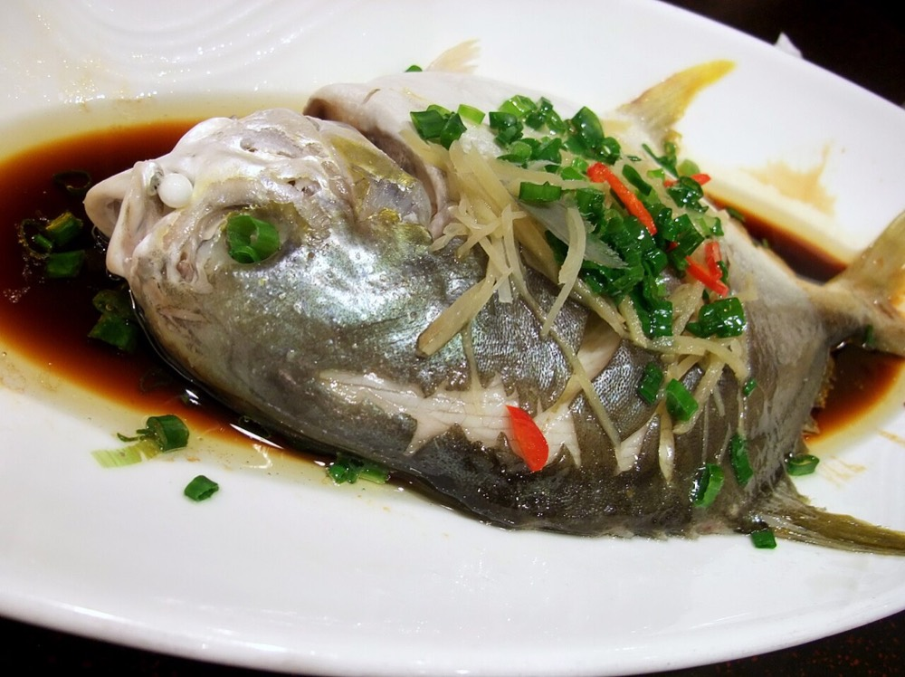
Illustrative photo
Donghai Hui Zhoushan Seafood (West Nanjing Road)东海汇舟山海鲜(南京西路店)Zhoushan seafood
Dianping
4.918,724 reviewsNew on the 2026 Must-Eat List
Amap
4.6166 reviews
¥ / person
¥231
Two dinersTwo diners, 2025 and 2026
静安区凤阳路545号魔贸580商场3楼Line 13 West Nanjing Rd (南京西路) exit 5, 540 m walk10:30–14:00, 17:00–23:00 · 0.7 km from centre
Tableside-blanched “Eighteen Cuts” seafood堂灼十八斩162 Dianping users recommend it
Source details and links
SMZDM (16 Sep 2025) and a Ctrip user (11 Jan 2026), both for this West Nanjing Rd branch.SMZDM · Ctrip
Chinese
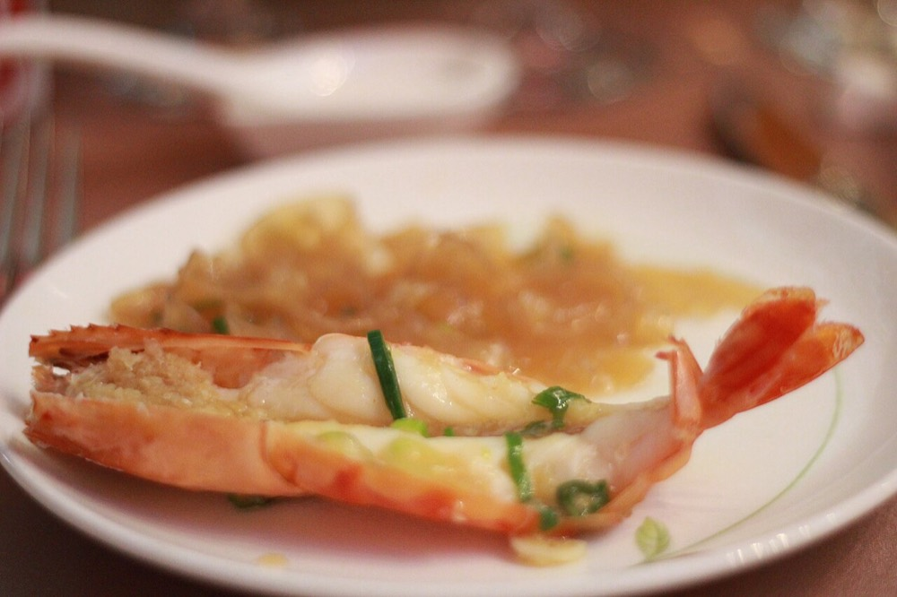
Illustrative photo
Xuji Seafood (Xuhui)徐记海鲜(肇嘉浜店)Hunan and Cantonese seafood
Dianping
4.97,015 reviewsNew on the 2026 Must-Eat List
Amap
4.7144 reviews
¥ / person
¥290
MichelinMichelin Selected, 2026
徐汇区肇嘉浜路500号Zhaojiabang Rd (肇嘉浜路) exit 2, 430 m walk11:00–14:00, 17:00–23:00 · 3.8 km from centre
Crisp-skinned roast squab玻璃乳鸽97 Dianping users recommend it
This exact branch (407 Zhaojiabang Rd). Also recommended by food writer Nomfluence, 2025.Michelin listing
Chinese
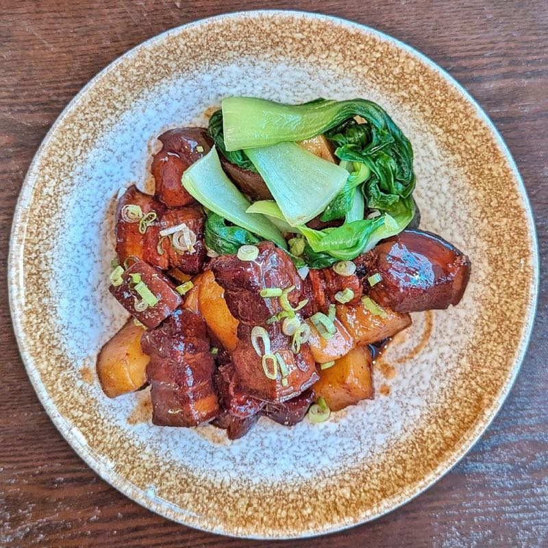
Illustrative photo
Xingxing Restaurant兴兴·海派本帮菜Shanghainese
Dianping
4.818,651 reviewsMust-Eat List 7 yrs running
Amap
4.8276 reviews
¥ / person
¥168
Amap ratingAmap 4.8 from 276 reviews
浦东新区齐河路258号上海漫乐城3楼L30511:00–14:00, 17:00–22:00 · 6.5 km from centre
Cooked large prawns marinated in Chinese rice wine熟醉大头虾222 Dianping users recommend it
Source details and links
Exact branch, 齐河路258号 上海漫乐城 3F (Dianping's own shop page reads L305). Amap's own users, independent of Dianping. Ctrip's 4.8 from 8 reviews is too few to count.Amap page · Ctrip page
静安区南京西路1818号1788广场2层204Jing'an Temple (静安寺), underpass exit, 250 m walk11:00–14:00, 17:00–21:00 · 3 km from centre
Roe-rich crab marinated in Shaoxing rice wine绍酒醉膏蟹3,193 Dianping users recommend it
Source details and links
Exact branch, 1788广场 2F (静安店, unit 204), 南京西路1818号. Amap's own users, independent of Dianping. Ctrip's 4.3 from 7 reviews is too few to count.Amap page · Ctrip page
HOME'S SiFang Cai (Xiangyang Park)HOMES上海本帮菜 (襄阳公园店)Shanghainese
Dianping
4.724,803 reviewsMust-Eat List 2 yrs running
Amap
4.7167 reviews
¥ / person
¥168
Amap ratingAmap 4.7 from 167 reviews
徐汇区新乐路47号…南路站 exit 10, 490 m walk (station name partly hidden on screen)11:00–14:00, 17:00–21:00 · 2.2 km from centre
Signature red-braised pork belly特色红烧肉208 Dianping users recommend it
Source details and links
Exact branch, 新乐路47-1号 (Amap lists it as 必吃榜店, Dianping says 襄阳公园店). Amap's own users, independent of Dianping. Shanghai's 2026 government dining guide names 新乐路47号; the Julu Rd HOMES is a separate older outlet. Amap's public ranking page shows 4.3, the live page 4.7 on 11 Nov.Amap page · City dining guide
Chinese
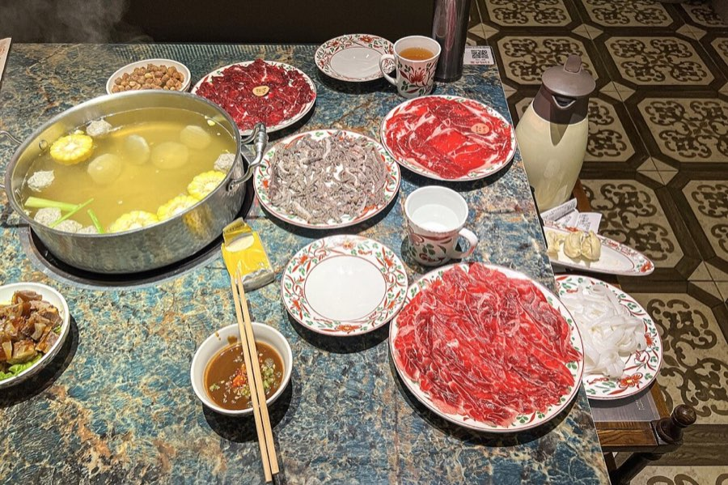
Illustrative photo
Jinri Niushi, Chaoshan beef hotpot (Xuhui main branch)今日牛事潮汕鲜牛肉火锅(徐汇总店)Chaoshan beef hotpot
Dianping
4.717,029 reviewsMust-Eat List 2 yrs running
Amap
4.8161 reviews
¥ / person
¥129
Crowd ratingTrip.com 4.7 from 129 reviews
徐汇区柳州路423号Line 12 Guilin Park (桂林公园) exit 1, 620 m walkOpen until 03:00 · 8.3 km from centre
黄浦区力宝广场 (Amap: 淮海中路222号力宝广场2楼)Line 14 South Huangpi Rd (一大会址·黄陂南路) exit 5, walk11:00–21:30 · 0.8 km from centre
Yuan Yuan's red-braised pork belly圆苑红烧肉447 Dianping users recommend it
Source details and links
Exact branch, 淮海中路222号 力宝广场 2F. Amap's own users, independent of Dianping. Shanghai's 2026 government dining guide lists the address. Ctrip shows a mixed 4.1 from 7 reviews, too few to count.Amap page · City dining guide
ChineseIllustrative photo
Shuai Kitchen Delicate Shanghainese Restaurant (Changle Road)帅帅精致家常味(长乐路店)Shanghainese with contemporary dishes
Dianping
4.712,770 reviewsNew on the 2026 Must-Eat List
Amap
4.8247 reviews
¥ / person
¥195
Press / writerKnews (Shanghai TV news), Feb 2026
Hard to book: reserve ahead.
黄浦区长乐路175-4号(近地铁13号线淮海中路站3号口,锦江饭店旁)Line 13 Middle Huaihai Rd (淮海中路) exit 3, 320 m walk11:00–14:00, 16:30–21:00 · 1.6 km from centre
Grandma's red-braised pork belly外婆红烧肉743 Dianping users recommend it
Source details and links
On-site report, plus a named food-media feature on the same Changle Rd shop, Mar 2024.Hard to book: reserve ahead.Knews · 2024 feature
Chinese
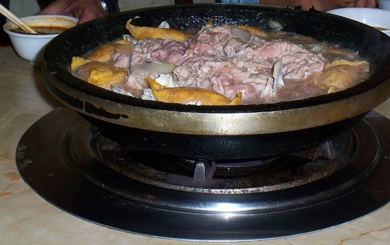
Illustrative photo
Chunwei Banyu Fu (Jing’an)纯味斑鱼府(静安店)Yunnan-style fish hotpot
Dianping
4.712,100 reviews
Amap
4.6118 reviews
¥ / person
¥143
Amap ratingAmap 4.6 from 118 reviews
静安区武宁南路381号(近地铁13、14号线5A号出口)武宁路 (Lines 13 and 14) exit 5A, 20 m walk11:00–22:30 · 3.9 km from centre
Signature fresh fish招牌活斑鱼4,440 Dianping users recommend it
Source details and links
Exact branch, 武宁南路381号 (静安店). Amap's own users, independent of Dianping. Amap's public page shows 4.9 with no count; the live page read 4.6 from 118 on 11 Nov. Ctrip lists the same address. Yunnan-style fish hotpot.Amap page · Ctrip page
Chinese
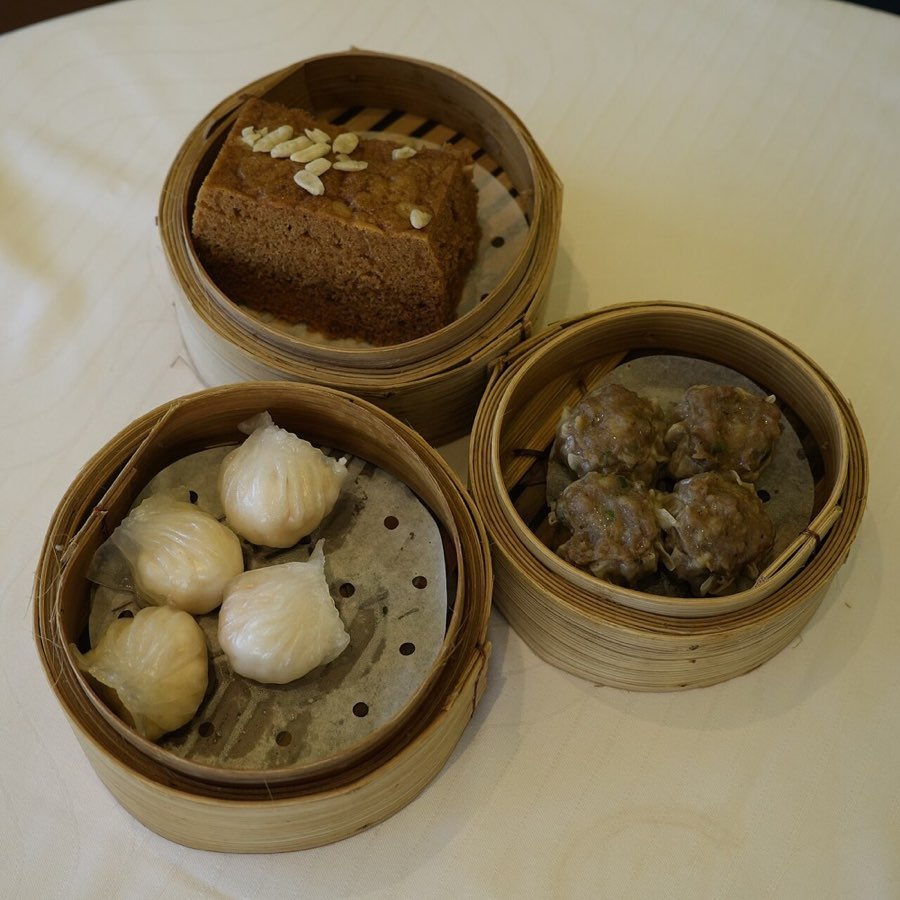
Illustrative photo
Ren Xing Ji (Dingxi Road)任兴记(定西路店)Shunde-style Cantonese
Dianping
4.712,040 reviewsMust-Eat List 2 yrs running
Amap
4.796 reviews
¥ / person
¥139
Two dinersTwo diners, both 2024
长宁区定西路792-1(近延安路口)60 m from the Dingxi Rd / Yan'an West Rd junction (nearest metro: West Yan'an Rd (延安西路))11:00–14:00, 17:00–22:30 · 5.3 km from centre
Thin sweet pancake filled with red beans红豆薄撑150 Dianping users recommend it
Qiantang Qiuhe — Contemporary Jiangsu and Zhejiang Cuisine (Dahua)钱塘秋荷·新江浙菜 (大华店)Jiangsu and Zhejiang cuisine
Dianping
4.79,877 reviews
Amap
4.7118 reviews
¥ / person
¥105
Amap ratingAmap 4.7 from 118 reviews
宝山区大华二路300号大华三路 exit 3, 1.3 km walk10:30–14:00, 16:30–21:00 · 7.4 km from centre
Qiuhe signature roast duck秋荷烤鸭426 Dianping users recommend it
Source details and links
Exact branch, 大华二路300号 (Baoshan; Dianping 大华店). Amap's own users, independent of Dianping. Trip.com confirms the branch (4.5 from 2 reviews, too few to count). 7.4 km from the centre.Amap page · Trip.com page
Chinese
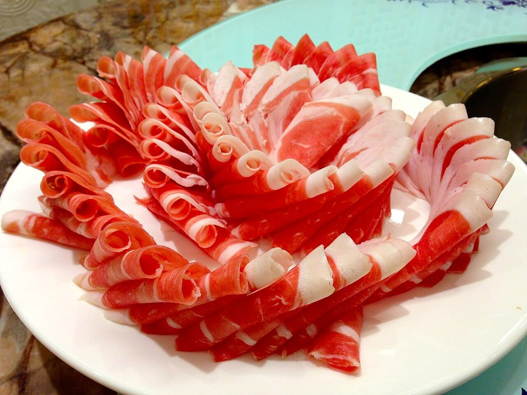
Illustrative photo
Jiumi Yangrou Lu (Huanghe Road Main Branch)九米羊肉炉(上海黄河路总店)Southern Fujian lamb hotpot
Dianping
4.78,609 reviews
Amap
4.7158 reviews
¥ / person
¥124
Amap ratingAmap 4.7 from 158 reviews
黄浦区黄河路98号人民广场 exit 8, 290 m walk11:00–02:00 (next day) · 0.5 km from centre
Slow-simmered lamb hotpot炖煮羊肉炉337 Dianping users recommend it
Source details and links
Exact branch, 黄河路98号 (总店), near People's Square. Amap's own users, independent of Dianping. Trip.com lists the same address and hours. Southern Fujian lamb hotpot, table service.Amap page · Trip.com page
虹口区甜爱支路24-50号301、302室虹口足球场 exit 6, 450 m walk11:00–14:00, 17:00–21:00 · 4.4 km from centre
Sliced roast duck served two ways片皮鸭两吃26 Dianping users recommend it
Source details and links
Exact branch, 甜爱支路24-50号 301-302 (Hongkou). Amap's own users, independent of Dianping. Ctrip lists the same rooms (4 reviews, too few to count).Amap page · Ctrip page
ChineseIllustrative photo
Siji Nongpu — Four Seasons Farm (Tianping Road)四季农圃(天平路店)Shanghainese farmhouse cooking
Dianping
4.72,723 reviewsMust-Eat List 2 yrs running
Amap
4.668 reviews
¥ / person
¥190
Two dinersTwo diners, both 2023
Mixed comments on some dishes.
徐汇区天平路137号独栋Line 11 Jiaotong University (交通大学) exit 2, 500 m walk11:00–14:00, 17:00–21:30 · 4.9 km from centre
Freshly filleted eel strips gently cooked in a light sauce白烧现剖鳝丝63 Dianping users recommend it
Source details and links
live2makan blog (25 May) and a Note.com write-up (3 Dec) of the same Tianping Rd shop.Mixed comments on some dishes.live2makan · Note.com
Chinese
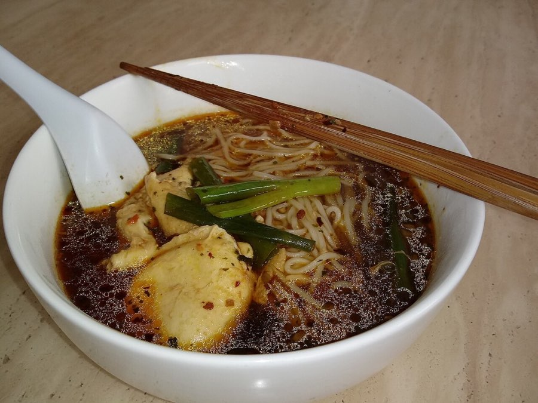
Illustrative photo
Huxi Lao Longtang Noodle House (Dingxi Road)沪西老弄堂面馆(定西路店)Shanghainese noodles
Dianping
4.631,782 reviewsMust-Eat List 8 yrs running
Amap
4.8997 reviews
¥ / person
¥40
Press / writerXinmin Evening News, 8 Apr 2025
长宁区定西路685号101West Yan'an Rd (延安西路) exit 2, 900 m walk10:00–14:30, 15:30–20:30 · 5.4 km from centre
Clam and pork-liver noodles蛤蜊猪肝面678 Dianping users recommend it
Source details and links
The reporter's own meal at the Dingxi Rd shop. Ctrip also shows 4.1 from 32 reviews (too few to count alone).Article · Ctrip rating
ChineseIllustrative photo
Ruifuyuan Restaurant (Maoming South Road)瑞福园酒家(茂名南路店)Shanghainese
Dianping
4.617,498 reviewsMust-Eat List 2 yrs running
Amap
4.7257 reviews
¥ / person
¥151
Press / writerShangguan News (Jiefang Daily group), 4 Oct 2026
黄浦区瑞金二路街道茂名南路132号(近复兴中路)South Shaanxi Rd (陕西南路) exit 8, 410 m walk11:00–14:00, 17:00–21:00 · 2.1 km from centre
Hot yellow croaker soup with handmade small wontons热气大黄鱼手工棒打小馄饨汤254 Dianping users recommend it
Source details and links
Feature by a named reporter on 132 Maoming South Rd. Also in Nomfluence's best-Shanghainese list, 2025.Article · Nomfluence
ChineseIllustrative photo
Xinya Tea House (Fengshengli)新雅(丰盛里店)Cantonese dim sum
Dianping
4.613,759 reviewsMust-Eat List 2 yrs running
Amap
4.577 reviews
¥ / person
¥138
Press / writerXinmin Evening News, 19 Nov 2023
静安区茂名北路281弄16号3楼301-302单元(地铁12号线南京西路站14号口)Line 12 West Nanjing Rd (南京西路) exit 14, 10 m walk08:00–10:00, 11:00–16:00, 17:00–21:00 · 1.4 km from centre
Crispy-skinned roast squab玻璃脆皮乳鸽皇123 Dianping users recommend it
Source details and links
Food writer Shen Jialu describes repeat meals at this Fengshengli branch.Article
Chinese
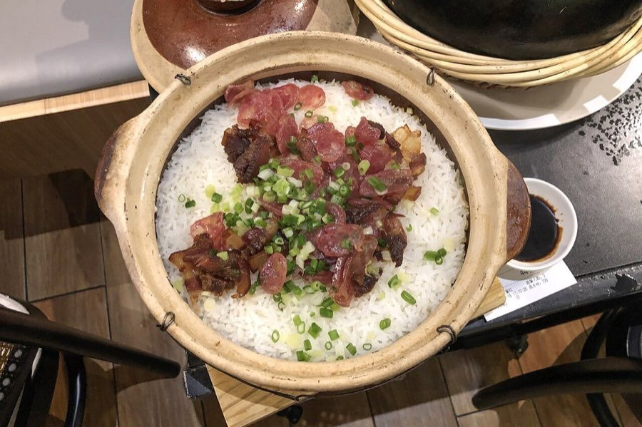
Illustrative photo
Yue LaiJi (Da Pu Road)粤来记·烧味·生蚝鸡煲(打浦路店)Cantonese roast meats and chicken clay pots
Dianping
4.428,791 reviewsNew on the 2026 Must-Eat List
Amap
4.7289 reviews
¥ / person
¥96
Crowd ratingTrip.com 4.7 from 260 reviews
黄浦区打浦路399号(近瞿溪路)Line 4 Luban Rd (鲁班路) exit 3, 280 m walkOpen until 02:00 · 3.6 km from centre
Nourishing-style chicken clay pot滋补鸡煲18,639 Dianping users recommend it
徐汇区斜土路1422弄-12号(轻工大木桥小区西北门内10米)Line 12 Jiashan Rd (嘉善路) exit 4, 500 m walk10:00–21:00 · 3.9 km from centre
Lamb noodles羊肉面90 Dianping users recommend it
Source details and links
Same address as Dianping's shop page (Lane 1422 Xietu Rd).Michelin listing
ChineseIllustrative photo
Wenzhou Niurou Guan (Zhenping Road)温州牛肉馆(镇坪路店)Wenzhou beef hotpot and noodles
Dianping
4.42,865 reviews
Amap
4.650 reviews
¥ / person
¥92
Two dinersPenguin Food Guide 2022 and a diner 2025
The food guide found the seasoning only average.
普陀区中山北路2165弄7号-6号(秋月枫舍步行街内)Zhenping Rd (镇坪路) exit 3, 200 m walk10:30–21:30 · 4.7 km from centre
Beef and tendon hotpot半筋半肉锅62 Dianping users recommend it
Source details and links
Guide's own tasting (Sohu, 14 Dec 2022) and a separate diner's meal (3 Dec 2025), both naming the Zhenping Rd branch.The food guide found the seasoning only average.Food guide · Diner
Chinese
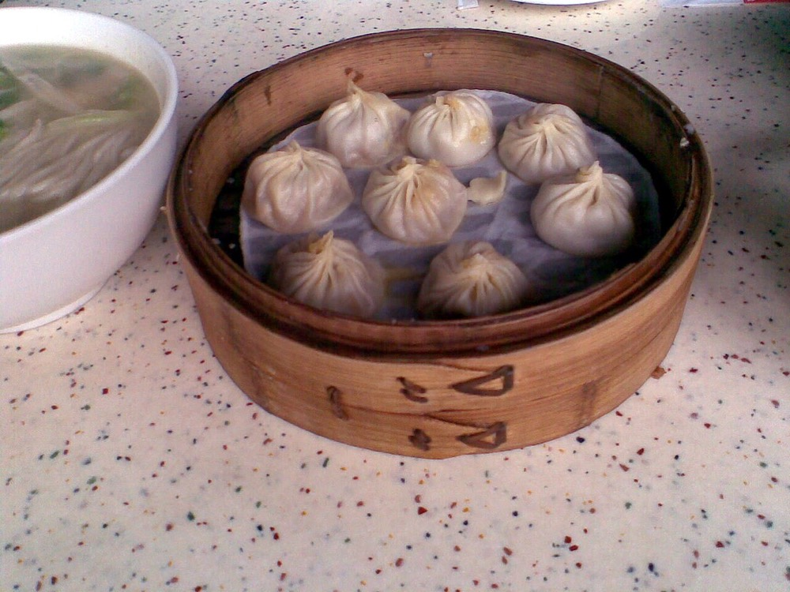
Illustrative photo
Qiao Ai Lai Lai Xiao Long (Huangpu)莱莱小笼·乔艾(天津路总店)Shanghainese soup dumplings
Dianping
4.331,243 reviewsMust-Eat List 5 yrs running
Amap
4.71,335 reviews
¥ / person
¥57
MichelinMichelin Bib Gourmand, 2026
Dianping rating 4.3 is under the 4.4 bar; kept because of the Michelin Bib Gourmand.
黄浦区天津路506号/481号Line 1 人民广场 exit 19, 580 m walk09:00–14:30, 15:30–21:00 · 0.7 km from centre
Eight crabmeat, roe and pork soup dumplings蟹粉鲜肉小笼8只604 Dianping users recommend it
Source details and links
506 Tianjin Rd. Nomfluence 2026 also ranks it a top-three xiaolongbao.Dianping rating 4.3 is under the 4.4 bar; kept because of the Michelin Bib Gourmand.Michelin listing
Italian
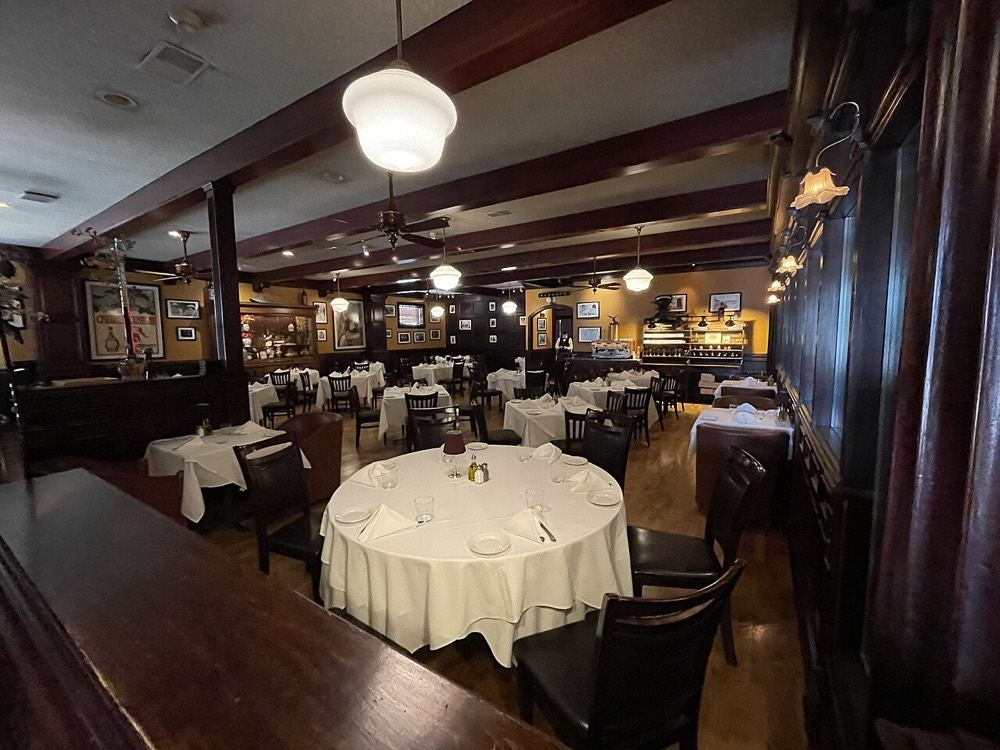
Illustrative photo
Da Vittorio ShanghaiDA VITTORIO SHANGHAI（外滩店）Lombard Italian fine dining
Evidence it is open: Latest Amap review dated 8 Jul 2026
Café and restaurant menus differ; the tailored-menu starting price is not a blanket minimum spend.
静安区陕西北路186号Prada荣宅2楼Nanjing West Road Station exit 13, 630 m walkDaily lunch 11:30-13:30; dinner 17:30-21:30
Lobster tagliolini and tiramisu in Prada's restored mansion.Reserve at +86 21 2218 0388; an English/Chinese menu is published.
Source details and links
Michelin Selected and two Gambero Rosso forks in 2026 for the Rong Zhai restaurant.Café and restaurant menus differ; the tailored-menu starting price is not a blanket minimum spend.
徐汇区东湖路9号裙房1MLine 1, Changshu Road Station exit 2, 750 m walkDaily 11:00-01:00
Salt-room-aged Australian beef and Mayura wagyu.Reserve at +86 21 5465 1765 and confirm the entrance; Michelin lists floor 1M.
Source details and links
Michelin recognises its beef selection and aging; Rachel Gouk also recommends it as a steak specialist.Floor descriptions differ: Michelin says 1M; Nomfluence says 2F.
Evidence it is open: Latest Amap review dated 5 Aug 2026
A 2024 diner reported delayed seating despite a reservation.
静安区延平路98号创意园2楼Jing'an Temple (Time Out); line and exit unverifiedDaily 17:30-01:00
Josper-grilled steaks and raw dishes in an intimate room.Reserve at +86 21 6241 8568; the venue listing also links DiningCity.
Source details and links
The exact Yanping Road restaurant clears the review-count threshold. This is a crowd snapshot, not a critic's award.A 2024 diner reported delayed seating despite a reservation.
Official hours used; Michelin gives a different schedule. Confirm steak weight, supplements and final price.
静安区延安中路1218号静安香格里拉大酒店4层Jing'an Temple (hotel access); line and exit unverifiedLunch 11:30-14:00; dinner Sun-Thu 17:30-21:30, Fri-Sat 17:30-22:00
House dry-aged Australian beef and classic chophouse sides.Reserve through the hotel at +86 21 2203 8889.
Source details and links
Michelin supports the steak cooking at the Jing An Shangri-La restaurant.Official hours used; Michelin gives a different schedule. Confirm steak weight, supplements and final price.
Steakhouses
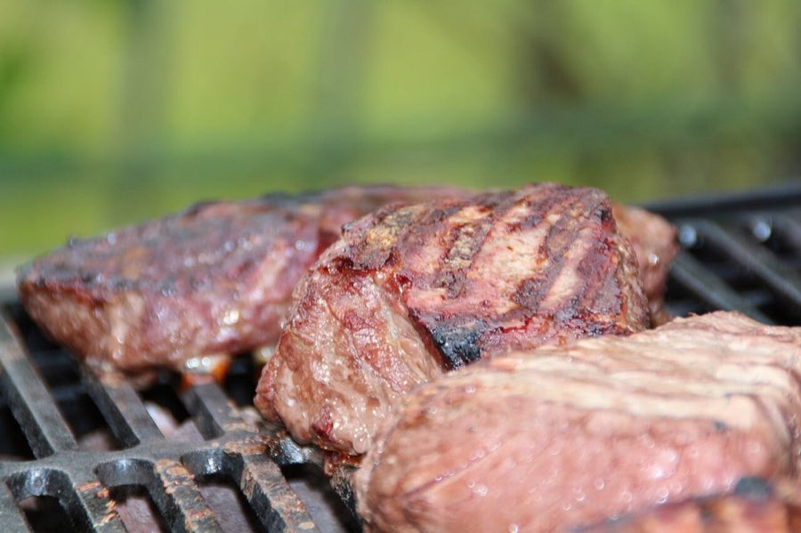
Illustrative photo
Wolfgang's Steakhouse沃夫冈牛排馆（白玉兰广场店）New York dry-aged steakhouse
Choose the Sinar Mas branch; check the steak weight and total before ordering.
虹口区东长治路588号白玉兰广场1楼International Passenger Terminal Station exit 3, 160 m walkDaily 11:30-22:00
USDA Prime porterhouse and classic American sides; large cuts suit sharing.Reserve the Sinar Mas branch at +86 21 5582 9715; confirm its entrance.
Source details and links
Gouk recommends its traditional dry-aged porterhouse. The matched branch is Sinar Mas Plaza.Choose the Sinar Mas branch; check the steak weight and total before ordering.
Japanese
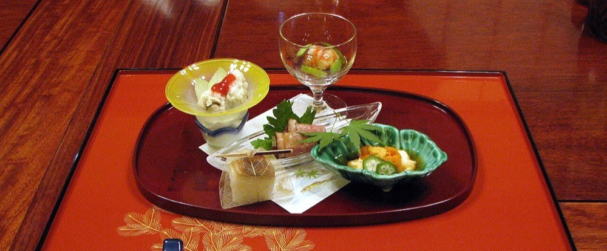
Illustrative photo
Narisawa ShanghaiNARISAWA（天安千树店）Japanese Satoyama tasting menu
Dianping
4.7561 reviews
Amap
4.53 reviewsfew reviews
¥ / person
Aug 2026 guide average ¥2,067; unverifiedper person
Complex street numbers differ between sources; use Building E, unit E-L361 and confirm the entrance.
黄浦区吉安路29号新天地东台里E座3楼E-L361室Laoximen Station exit 1, 560 m walkDaily 12:00-14:00, 18:00-22:30
Takeo Oyama's seasonal sushi and chef-counter experience.Use the current listing's online booking; request Oyama's counter/session and confirm the mall entrance.
Source details and links
Documents Takeo Oyama's return at Xintiandi Galleria. September 2026 reporting corroborates the same unit.Complex street numbers differ between sources; use Building E, unit E-L361 and confirm the entrance.
Chef Sun speaks no English, per Jan 2026 reporting; use hotel help or translation.
长宁区凯旋路1398号长宁国际T8栋2楼Hongqiao Road Station exit 1, 250 m walkDaily 11:30-14:00, 17:30-22:00
Sun Jianguo's seasonal seafood and multi-course Japanese cooking.Book through the current venue listing and request chef Sun's counter; published lunch is ¥680.
Source details and links
Reviews Sun Jianguo's restaurant after its move to IM Shanghai. The Kaixuan Road venue is the approved branch.Chef Sun speaks no English, per Jan 2026 reporting; use hotel help or translation.
The price is from Nov 2023; current menu and hours are unverified.
徐汇区复兴中路1331弄3号102室（M+黑石公寓）Changshu Road Station exit 4, 700 m walk18:00–23:00
Binchotan-grilled Shaoxing chicken from the Torishiki lineage.Contact the restaurant through Michelin to reserve the set-menu sitting; à la carte skewers start after 20:00.
Source details and links
Newly Selected in 2026 for specialist yakitori at M+ Blackstone Apartments.The price is from Nov 2023; current menu and hours are unverified.
The ¥298 lunch offer belongs to the newer Xintiandi branch.
静安区常德路688号PAC购物中心L1Changping Road Station exit 2, 260 m walkDaily 11:30-14:00, 17:30-19:30, 20:00-22:00
Compact chef counter with comparatively affordable omakase.Reserve through the current venue listing; confirm the PAC branch and ¥498 lunch availability.
Source details and links
The firsthand review recommends the original PAC counter. The October 2026 update confirms PAC remains alongside a second branch.The ¥298 lunch offer belongs to the newer Xintiandi branch.
Evidence it is open: Dianping 12 Nov: listed with normal hours (shows resting until 13:00 today; open 13:00 to 01:00, Friday to 02:00); on Dianping's 2026 Play list; 786 people recommend it; Latest Amap review dated 2 Nov 2026
Compact room; expect peak-time queues.
黄浦区进贤路230号Line 1, Shaanxi South Road Station, 570 m walkSun-Thu 13:00-01:00; Fri-Sat 13:00-02:00
Dre Yang's cocktails, with separate daytime and evening menus.Walk-in only, per the operator; go early with a group.
Source details and links
Ranked no. 19 in Asia in 2026 for this Shanghai bar.Compact room; expect peak-time queues.
Evidence it is open: Latest Dianping review dated 25 Oct 2026; Latest Amap review dated 25 Apr 2026
Use 304-2 Tongren Road; the former Fenyang Road address is obsolete.
静安区铜仁路304-2号Line 7, Jing'an Temple Station exit 6, 590 m walk19:00-02:00 (days not stated)
Sam Kuan's cocktails tailored to guests' preferences.The operator links a reservation channel; contact +86 199 1675 8174.
Source details and links
A leading pick in Gouk's 2026 selection. Sophie Steiner also reviewed the reopened Tongren Road operation in July 2024.Use 304-2 Tongren Road; the former Fenyang Road address is obsolete.
Evidence it is open: Latest Dianping review dated 26 Oct 2026; Latest Amap review dated 8 Aug 2026
Expect queues at the concealed entrance.
黄浦区复兴中路579号South Shaanxi Road, Line 1, Exit 4; about 980 m (Ctrip)Sun-Thu 18:00-01:30; Fri-Sat 18:00-02:30 (2024 guide; reconfirm)
Concealed bookcase entrance and several upstairs cocktail rooms.Enter through OCHO's bar-tools shop and concealed bookcase; room-access rules are unverified.
Source details and links
Tatler recognises the Fuxing Middle Road speakeasy in its current bar awards.Expect queues at the concealed entrance.
Evidence it is open: Latest Dianping review dated 11 Nov 2026
黄浦区雁荡路109号INS复兴公园1-2楼Yidahuizhi-Xintiandi Station exit 5, 640 m walk18:00-02:00 (shown as open now at the read)
Sober Airways cocktail flight; Kissa, Izakaya and Sakaba rooms.Contact +86 21 5353 0065 and specify Sakaba for cocktails; ask staff about current Tipsy-room access.
Source details and links
Recommends the Sober Airways cocktail flight. The operator confirms the current INS location at 109 Yandang Road.
Evidence it is open: Latest Dianping review dated 3 Nov 2026
Floor schedules and Monday opening conflict; reconfirm before going.
黄浦区复兴中路580号Line 1, Shaanxi South Road Station exit 4, 680 m walkTue-Thu, Sun 18:30-01:00; Fri-Sat 18:30-02:00 (per Tatler, Oct 2026; Mon not stated)
Tequila and mezcal cocktails across a multi-floor agave venue.Ask for the cocktail-bar floor; current floor-specific service and booking rules are unverified.
Source details and links
Recognition is for COA Shanghai. Drinks International documents its 14 June 2024 reopening at 580 Fuxing Middle Road.Floor schedules and Monday opening conflict; reconfirm before going.
Evidence it is open: Dianping 12 Nov: listed; page says recent opening hours were adjusted and shows closed all day 12 and 13 Nov 2026; Huangpu bar popular list no. 2; 29 Oct 2026 customer reviews describe drinks and service
Hong Kong awards do not apply to the Shanghai branch.
黄浦区复兴中路527号思南公馆Line 13, Yidahuizhi-Xintiandi Station exit 5, 580 m walkDaily 18:00-01:00
Italian aperitivo and classic cocktails in a two-floor Sinan Mansions house.The venue listing gives +86 150 0197 9977; group seating and booking policy are unverified.
Source details and links
The recommendation covers the Shanghai opening and its Italian classics concept.Hong Kong awards do not apply to the Shanghai branch.
Evidence it is open: Dianping 12 Nov: listed with normal hours (open 11:00 to 24:00 today, Fri to 01:00); 26 Oct 2026 firsthand review describes drinks, service and a full room
Expect a possible wait, including on weeknights.
徐汇区永嘉路130号101及201室Shaanxi South Road Station exit 7, 870 m walkSun-Thu 11:00-00:00; Fri-Sat 11:00-01:00
Italian classics, aperitivo, espresso and olives; Termini and Triple Neck collaboration.October's reviewer waited 20 minutes on a Monday; a booking channel was not verified.
Source details and links
The firsthand account praises the strong cocktails and attentive service; Sophie Steiner also covers the aperitivo programme.Expect a possible wait, including on weeknights.
BarsIllustrative photo
Penicillin ShanghaiFermentation-focused cocktail bar
Open status not yet checked: look at Dianping before you go.
Hotel lists a 21:30 last order despite 23:00 closing. Amap: Le Bar has no entry of its own, so the star is on the Capella Shanghai Jian Ye Li hotel entry (same address).
徐汇区建国西路480号上海建业里嘉佩乐酒店Daily 11:30-23:00; last order 21:30 (operator; reconfirm)
Shikumen hotel setting and French-influenced cocktails with local ingredients.Smart casual; reserve cocktail seating at +86 21 5466 9928 and confirm last orders.
Source details and links
This exact Shanghai bar is in the unnumbered 2026 selection, based on anonymous paid inspections.Hotel lists a 21:30 last order despite 23:00 closing. Amap: Le Bar has no entry of its own, so the star is on the Capella Shanghai Jian Ye Li hotel entry (same address).
Evidence it is open: Dianping 12 Nov: listed with normal hours (shows resting until 16:00; open 16:00 to 02:00); on Dianping's 2026 Play list; 8 Oct 2026 specialist review recounts a firsthand visit
Rare bottles can be expensive; check each price.
长宁区宣化路233号Zhongshan Park Station exit 8, 760 m walk16:00-02:00 (Aug 2026 guide; days not stated)
Extensive rotating imported draught beers and rare bottles.Bring camera translation: the firsthand reviewer found menus and service largely Chinese; formal booking policy is unverified.
Source details and links
The specialist beer writer gives a strong firsthand recommendation of the draft and rare-bottle selection.Rare bottles can be expensive; check each price.
BarsIllustrative photo
Aura Lounge & Jazz BarAURA 酒廊（上海浦东丽思卡尔顿酒店）Bar · Hotel cocktails and skyline jazz
Evidence it is open: Dianping 12 Nov: shows open now, hours 08:00 to 23:00; September 2026 visitor review; hotel reply dated 24 Sep
Jazz follows a standing schedule; no named trip-week performance is verified.
浦东新区世纪大道8号上海浦东丽思卡尔顿酒店52楼Lujiazui; about 8 minutes' walk (hotel-map listing)Sun-Thu 08:00-23:00; Fri-Sat 08:00-00:00
Contemporary cocktails, indoor Bund views, live jazz and seafood towers in an Art Deco lounge.Enter via the Ritz-Carlton hotel for 52F; smart casual, with an English/Chinese drinks menu. Reserve at +86 21 2020 1717.
Source details and links
Forbes names this exact lounge in its unnumbered 2026 Hotel Star Bars selection. Rachel Gouk praises its jazz and attentive service; her account includes promotional dining offers.Jazz follows a standing schedule; no named trip-week performance is verified.
Evidence it is open: Latest Dianping review dated 12 Sep 2026; Venue-administered event listing for 28 Nov 2026
28 Nov closes at 06:00 on 29 Nov; other nights' entry terms are unverified.
黄浦区长乐路462号M101室Line 1, Shaanxi South Road Station, 490 m walk10:00-22:00 shown as open for business (looks like a default, not nightclub hours)
Community-oriented house, techno, bass and electro dancefloor.The 28 Nov organiser listing states 18+ but does not identify a checkout method. Check the ticket channel and door rules; foreign-passport ticketing and entry are unverified.
Events, 24 to 30 Nov:
Wed 25 Nov: Sam Tbd (listing only, time and price unverified)
Fri 27 Nov: Azrel with dayJreAmeR (listing only, time and price unverified)
Sat 28 Nov: Oranda with Knopha, Cousin and meer., 22:00 to 06:00, ¥128, 18+
Source details and links
Documents Heim's return to Green Station on Changle Road. The November original event page confirms room M101.28 Nov closes at 06:00 on 29 Nov; other nights' entry terms are unverified.
Evidence it is open: Latest Dianping review dated 18 Oct 2026; RA event listing for 4 Sep 2026 fifth anniversary
No dated trip-week booking found; older Julu Road address is obsolete.
黄浦区淮海中路523-527号TX淮海B1Middle Huaihai Road; about 15 min walk (directory); nearest station not comparedWed-Thu 22:00-04:00; Fri-Sun 12:00-06:00 (per SmartShanghai, Mar 2026)
Hard techno, industrial and electro in the TX Huaihai basement.Check the venue's WeChat programme; main dance nights are chiefly weekends and holidays. Check the ticket channel and door rules; foreign-passport ticketing and entry are unverified.
Source details and links
The current TX room is praised for sound and approachable layout; the September guide also recommends the club.No dated trip-week booking found; older Julu Road address is obsolete.
Evidence it is open: Dianping 12 Nov: listed with normal hours (not open today, Thursday; next opening Friday 22:00 to 05:00); RA event listing for 13 Nov 2026: Chris Cruse and DE FEO
Local adviser (pre-2025) warned of crowds; November guide reports crowding in the smaller room.
黄浦区淮海中路523号TX淮海3层Line 14, Yidahuizhi-Huangpi South Road Station exit 7, 470 m walk20:00-06:00 (open for business at the read)
Two rooms spanning pop, house, techno and electro.Select the room and programme carefully; regular ticketing arrangements are unverified. Check the ticket channel and door rules; foreign-passport ticketing and entry are unverified.
Source details and links
The current TX Huaihai venue receives substantive editorial support; its November listing confirms a scheduled night.Local adviser (pre-2025) warned of crowds; November guide reports crowding in the smaller room.
Evidence it is open: Dianping 12 Nov: listed with normal hours (shows resting until 11:00; open 11:00 to 24:00); RA event listing for 19 Nov 2026: Human Illusions 07
Some nights favour listening; 28 Nov time and cover are unverified.
长宁区昭化路658号C·PARK LG层Yan'an West Road (C-Park area); line and exit unverified12:00-03:00 (open for business at the read)
Adventurous ambient, electronica, dub and techno programming.The Lim Giong night has only an editorial listing, with no verified ticket channel. Check the ticket channel and door rules; foreign-passport ticketing and entry are unverified.
Events, 24 to 30 Nov:
Sat 28 Nov: Lim Giong (listing only, time and price unverified)
Source details and links
Recommends the Shanghai room and its adventurous bookings, including a Lim Giong DJ set.Some nights favour listening; 28 Nov time and cover are unverified.
Evidence it is open: Latest Dianping review dated 13 Sep 2026; Venue-administered RA grand-opening listing for 24 Sep 2026 (older than 45 days: check Dianping before you go)
Use 638 Zhaohua Road and unit D-L1-03; regular hours and trip-week ticket terms are unverified.
长宁区昭化路638号C·PARK地下一层D-L1-03Yan'an West Road (C-Park area); exit and walk unverifiedFri 22:00-02:00 (Dianping, tomorrow)
Hard techno, electro and international DJ bookings at C-Park.Use C-Park B1 unit D-L1-03; the venue's information contact is WeChat REACTOR2026. Check the ticket channel and door rules; foreign-passport ticketing and entry are unverified.
Source details and links
Cole Potashnyk recommends Reactor's hard techno and international DJ programming. The venue-administered RA page fixes the address at 638 Zhaohua Road, B1 D-L1-03.Use 638 Zhaohua Road and unit D-L1-03; regular hours and trip-week ticket terms are unverified.
Evidence it is open: Artist posts on 25 and 28 Aug 2026 report a completed 23 Aug performance (older than 45 days: check Dianping before you go)
Use the C-Park club, separate from the older Cedar Kitchen on Julu Road.
长宁区昭化路658号C·PARK海粟文化广场地下层LG13-15Yan'an West Road (C-Park area); exit and walk unverifiedHours not confirmed
Surround sound, multiple rooms and experimental live sets; city-pop and boogie also feature.658 Zhaohua Road is the complex's reference address; the street gate is unverified. Give the driver C-Park and LG13 to 15; check ticket and door rules, as foreign-passport ticketing and entry are unverified.
Source details and links
Heatwolves praises the new C-Park club's surround sound and design in June, and its programming in November. An artist-issued notice identifies unit LG13 to 15; 658 Zhaohua Road is the complex reference.Use the C-Park club, separate from the older Cedar Kitchen on Julu Road.
Live musicIllustrative photo
JZ ClubJZ Club爵士酒吧（衡山8号）Jazz club · Jazz concert club
Evidence it is open: Dianping 12 Nov: listed with normal hours (shows resting until 19:00 today; open 19:00 to 24:00, tomorrow 18:30 to 01:30); ticket offers on its listing for shows on 11 and 13-14 Nov; Official programme for 11 Nov 2026, posted 9 Nov
Use Hengshan 8; current set times and cover are unverified.
徐汇区衡山路8号水塔广场Line 1, Hengshan Road Station exit 3, 340 m walkMon 20:00-00:30 the next day (other days cut off on the card)
Local and international jazz, fusion, funk and big-band shows.Reserve a table; the current booking channel and visit-week programme are unverified. Check the ticket channel and door rules; foreign-passport ticketing and entry are unverified.
Source details and links
Recommends the current Hengshan 8 venue and its local and international musicians.Use Hengshan 8; current set times and cover are unverified.
Live musicIllustrative photo
Yuyintown Cube / Basement育音堂音乐青年小镇（C厅 / B厅）Live house · Independent band concert rooms
Dianping
4.426 reviews
Amap
4.51 reviewsfew reviews
Cost
Trip-week single tickets ¥0 to ¥268, including VIP
Evidence it is open: Dianping 12 Nov: both halls list upcoming ticketed shows (Cube: 14 Nov and 6 Dec 2026; Basement: 17 Jan 2027); Original ShowStart listings for 25 to 29 Nov 2026
Two separately ticketed halls; confirm your room before travelling.
长宁区昭化路658号C·PARK D楼地下层育音堂小镇（C厅LG-21室）Yan'an West Road (C-Park area); line and exit unverifiedHours not confirmed
Touring and emerging bands in separate Cube and Basement live rooms.Use ShowStart to select Cube/C厅 or Basement/B厅 and check any free-ticket registration requirements. Check the ticket channel and door rules; foreign-passport ticketing and entry are unverified.
Events, 24 to 30 Nov:
Wed 25 Nov: Community Stage Open Day (Basement), 20:00, free ticket
Thu 26 Nov: Instrumental Rock Night: 线 / cage / 谛听 (Basement), 20:00, ¥58 including one drink
Fri 27 Nov: Andria Rose with 补菜NVEG (Basement), 20:00, ¥180 early bird / ¥198 presale / ¥238 full / ¥340 early-bird pair / ¥370 pair (pair prices total for two)
All 7 events in the trip week
Fri 27 Nov: Pat D & Lady Paradox (Cube), 20:00, ¥180 early bird / ¥210 full
Sat 28 Nov: Chaochilan (潮池蓝) (Cube), 20:00, ¥120 full
Sun 29 Nov: Magnolian (Basement), 20:00, ¥168 presale / ¥218 full / ¥268 VIP
Sun 29 Nov: Spring Seed Vol.03 (Cube), 20:00, ¥19.90 student / ¥88 presale / ¥128 full / ¥138 pair (total for two)
Source details and links
The firsthand review praises sound, lighting and intimate concerts at the current C-Park rooms.Two separately ticketed halls; confirm your room before travelling.
Evidence it is open: Dianping 12 Nov: both halls list upcoming ticketed shows (Dream Hall: 11 and 26 Dec 2026; Future Hall: 5 Dec 2026); Original ticket listings for 24, 27 and 28 Nov 2026
Check 1F Dream Theatre versus 2F Future Theatre; ticket and entry rules vary by show.
普陀区宜昌路179号星在文化中心Zhongtan Road; about 15 min walk (directory); nearest station not compared09:00-18:00 shown as 'during break' (a daytime default, not show hours)
Dream Theatre and Future Theatre, with a highly regarded sound system.Damai explicitly supports foreign passports for Kings of Convenience; bring the ticketed ID. Other shows' passport ticketing and venue door rules are unverified.
Events, 24 to 30 Nov:
Tue 24 Nov: Kings of Convenience (1F hall), 20:30, ¥360 to ¥420
Sat 28 Nov: CHEEZY festival (2F hall), 17:00, ¥120 presale / ¥150 full
All 4 events in the trip week
Sat 28 Nov: ADEPT (1F hall), 20:00, ¥260 presale / ¥320 full
Source details and links
The editorial assessment praises its sound system. The April 2026 Star@ rename is at the same address.Check 1F Dream Theatre versus 2F Future Theatre; ticket and entry rules vary by show.
Evidence it is open: Dianping 12 Nov: lists upcoming ticketed shows (15 Nov and 12 Dec 2026); Original ShowStart listing for 27 Nov 2026
27 Nov is BIO-CANCER with KILL ALL POSERS; choose it for heavy music.
长宁区凯旋路1388号IM长宁国际南区LG层LG-37Hongqiao Road Station exit 1, 170 m walk10:00-22:00 (open for business at the read; probably a default, not show times)
Live concert room with praised sound; 27 Nov is a heavy-music show.ShowStart sells the 27 Nov BIO-CANCER show; separate doors time is not stated. Check the ticket channel and door rules; foreign-passport ticketing and entry are unverified.
Events, 24 to 30 Nov:
Fri 27 Nov: BIO-CANCER + KILL ALL POSERS, 20:00, ¥219 presale / ¥239 door / ¥399 pair (total for two)
Source details and links
The venue review praises sound quality in the IM Shanghai concert room.27 Nov is BIO-CANCER with KILL ALL POSERS; choose it for heavy music.
Live musicIllustrative photo
Jazz at Lincoln Center Shanghai林肯爵士乐上海中心Jazz club · Seated jazz concert club
Dianping
4.81,178 reviews
Amap
4.769 reviews
Cost
Pekka displayed ¥158 to ¥2,588, including dining/group packages
Evidence it is open: Dianping 12 Nov: venue listing shows normal hours (resting until 18:30; open 18:30 to 23:00) and ticketed concerts on 11-14 Nov and 4-18 Dec 2026; Original Damai listings for 25 to 29 Nov 2026
Displayed ranges include group or pair offers; confirm the per-person price and seating.
黄浦区南京东路139号4楼Line 10, Nanjing East Road Station, 250 m walk13:00-02:00 (open for business at the read)
Seated concerts with international jazz and blues performers.Damai lists no real-name purchase and admission about 30 minutes early; seating may involve shared tables. Check the ticket channel and door rules; foreign-passport ticketing and entry are unverified.
Events, 24 to 30 Nov:
Wed 25 Nov: Pekka Pylkkänen Quartet, 19:30, displayed ¥158 to ¥2,588 including dining and group packages
Thu 26 Nov: Pekka Pylkkänen Quartet, 19:30, displayed ¥158 to ¥2,588 including dining and group packages
Fri 27 Nov: Pekka Pylkkänen Quartet, 19:30, displayed ¥158 to ¥2,588 including dining and group packages
All 5 events in the trip week
Sat 28 Nov: Sugar Blue: Journey to the Roots, 19:30, displayed ¥260 to ¥450 including a pair-ticket offer
Sun 29 Nov: Pekka Pylkkänen Quartet, 19:30, displayed ¥158 to ¥2,588 including dining and group packages
Source details and links
Recommends the seated jazz venue and international programme. The correct street is Nanjing East Road.Displayed ranges include group or pair offers; confirm the per-person price and seating.
Evidence it is open: Latest Dianping review dated 11 Oct 2026; 23 Jun 2026 firsthand account of musicians' jazz jams
B1 address is triangulated from a 2025 notice; confirm the current entrance.
普陀区宜昌路179号B1层OKOK音乐人俱乐部Line 3/4, Zhongtan Road Station exit 3, 1.1 km walkClosed Mon-Tue; Wed-Sun 20:00-03:00
Musicians' jazz jams, fusion, funk and occasional rock shows beneath Star@.Confirm the basement entrance and current programme; booking and cover are unverified. Check the ticket channel and door rules; foreign-passport ticketing and entry are unverified.
Source details and links
The firsthand account praises musicians' jazz jams. The March jazz guide also identifies this separate basement venue.B1 address is triangulated from a 2025 notice; confirm the current entrance.
Chinese
Italian, steakhouse, Japanese
Bars
Clubs and live music
Dashed ring: approximate position
Labels
. Tap a pin for the name, address and a link to open it in Amap; the chips and search above filter the pins too.
No places match. Try another search or category.
Independent source
Where and hours
What to order / known for
ChineseIllustrative photo
Donghai Hui Zhoushan Seafood (West Nanjing Road)东海汇舟山海鲜(南京西路店)Zhoushan seafood
4.918,724 reviewsNew on the 2026 Must-Eat List
4.6166 reviews
Two dinersTwo diners, 2025 and 2026SMZDM (16 Sep 2025) and a Ctrip user (11 Jan 2026), both for this West Nanjing Rd branch.SMZDM · Ctrip
¥231
静安区凤阳路545号魔贸580商场3楼Line 13 West Nanjing Rd (南京西路) exit 5, 540 m walk10:30–14:00, 17:00–23:00 · 0.7 km from centre
Tableside-blanched “Eighteen Cuts” seafood堂灼十八斩162 Dianping users recommend it
ChineseIllustrative photo
Xuji Seafood (Xuhui)徐记海鲜(肇嘉浜店)Hunan and Cantonese seafood
4.97,015 reviewsNew on the 2026 Must-Eat List
4.7144 reviews
MichelinMichelin Selected, 2026500 Zhaojiabang Rd, same address as Dianping.Michelin listing
¥290
徐汇区肇嘉浜路500号Zhaojiabang Rd (肇嘉浜路) exit 2, 430 m walk11:00–14:00, 17:00–23:00 · 3.8 km from centre
Crisp-skinned roast squab玻璃乳鸽97 Dianping users recommend it
ChineseIllustrative photo
Ren He Guan (Xuhui)人和馆·上海菜(徐汇店)Shanghainese
4.850,105 reviewsMust-Eat List 5 yrs running
4.8693 reviews
MichelinMichelin 1 Star, 2026This exact branch (407 Zhaojiabang Rd). Also recommended by food writer Nomfluence, 2025.Michelin listing
¥170
上海市徐汇区肇嘉浜路407号(嘉善路地铁站5号口步行230米)Line 9/12 Jiashan Rd, exit 5Hours not read · 3.6 km from centre
Amap ratingAmap 4.8 from 276 reviewsExact branch, 齐河路258号 上海漫乐城 3F (Dianping's own shop page reads L305). Amap's own users, independent of Dianping. Ctrip's 4.8 from 8 reviews is too few to count.Amap page · Ctrip page
¥168
浦东新区齐河路258号上海漫乐城3楼L30511:00–14:00, 17:00–22:00 · 6.5 km from centre
Cooked large prawns marinated in Chinese rice wine熟醉大头虾222 Dianping users recommend it
Amap ratingAmap 4.6 from 107 reviewsExact branch, 1788广场 2F (静安店, unit 204), 南京西路1818号. Amap's own users, independent of Dianping. Ctrip's 4.3 from 7 reviews is too few to count.Amap page · Ctrip page
¥189
静安区南京西路1818号1788广场2层204Jing'an Temple (静安寺), underpass exit, 250 m walk11:00–14:00, 17:00–21:00 · 3 km from centre
Roe-rich crab marinated in Shaoxing rice wine绍酒醉膏蟹3,193 Dianping users recommend it
Press / writerXinmin Evening News, 5 May 2023Reporter visited, interviewed the founder and described the dishes at these exact premises (18 Damuqiao Rd).Article
¥164
徐汇区大木桥路18号玖时活力中心4层L4011室-L4013室Line 12 Jiashan Rd (嘉善路), 110 m walk11:00–21:30 · 3.5 km from centre
Yijia's red-braised pork belly忆家红烧肉90 Dianping users recommend it
Press / writerShanghai Observer / Yangpu district media, 4 Oct 2023Named reporter with a kitchen visit and interviews at 615 Anpu Rd.Article
¥180
杨浦区安浦路615号东方渔人码头国际中心B区2楼205-2号商铺Danyang Rd (丹阳路) exit 2, 200 m walk10:30–21:30 · 6.1 km from centre
Signature Huaiyang lion's-head pork meatball招牌淮扬狮子头50 Dianping users recommend it
ChineseIllustrative photo
Cong's Kitchen (Liuhe Building)聪菜馆(六合大厦店)Shanghainese with Cantonese influences
4.83,024 reviewsNew on the 2026 Must-Eat List
4.752 reviews
MichelinMichelin Bib Gourmand, 2026158 Liuhe Rd; Trip.com confirms the Liuhe Building branch.Only 52 reviews on Amap; Michelin already covers it.Michelin listing
¥268
黄浦区南京东路街道六合路158号(近第一百货)人民广场 (People's Square), 470 m walk11:00–14:00, 17:00–21:00 · 0.7 km from centre
Finely shredded water bamboo with shrimp paste虾酱芡白丝48 Dianping users recommend it
ChineseIllustrative photo
Weihuang Guangfuhe Seafood (Xiangyang South Road)威皇广福和小海鲜(襄阳南路店)Cantonese seafood and chicken hotpot
4.727,388 reviews
4.8483 reviews
Press / writerShanghaiLOOK street guide, 11 Feb 2022Original piece by a named writer recommending the seafood at 215 Xiangyang South Rd (hosted on The Paper).Article
¥109
徐汇区襄阳南路215号South Shaanxi Rd (陕西南路) exit 7, 430 m walk10:00–23:00 · 2.7 km from centre
Signature Huadiao wine chicken hotpot招牌花雕醉鸡煲47,584 Dianping users recommend it
ChineseIllustrative photo
Hong Kong Chizaiji, rice noodle rolls (Xiangyang South Rd)香港池仔记肠粉王(博多新记襄阳南路店)Cantonese rice noodle rolls and dim sum
4.725,791 reviewsMust-Eat List 7 yrs running
4.7211 reviews
Crowd ratingTrip.com 4.3 from 273 reviewsExact branch, 150 Xiangyang South Rd.Trip.com page
¥38
徐汇区襄阳南路150号(近南昌路)South Shaanxi Rd (陕西南路) exit 7, 150 m walk10:00–22:30 · 2.5 km from centre
Silky steamed rice noodle rolls filled with shrimp爽滑鲜虾肠粉351 Dianping users recommend it
ChineseIllustrative photo
HOME'S SiFang Cai (Xiangyang Park)HOMES上海本帮菜 (襄阳公园店)Shanghainese
4.724,803 reviewsMust-Eat List 2 yrs running
4.7167 reviews
Amap ratingAmap 4.7 from 167 reviewsExact branch, 新乐路47-1号 (Amap lists it as 必吃榜店, Dianping says 襄阳公园店). Amap's own users, independent of Dianping. Shanghai's 2026 government dining guide names 新乐路47号; the Julu Rd HOMES is a separate older outlet. Amap's public ranking page shows 4.3, the live page 4.7 on 11 Nov.Amap page · City dining guide
¥168
徐汇区新乐路47号…南路站 exit 10, 490 m walk (station name partly hidden on screen)11:00–14:00, 17:00–21:00 · 2.2 km from centre
Signature red-braised pork belly特色红烧肉208 Dianping users recommend it
ChineseIllustrative photo
Jinri Niushi, Chaoshan beef hotpot (Xuhui main branch)今日牛事潮汕鲜牛肉火锅(徐汇总店)Chaoshan beef hotpot
4.717,029 reviewsMust-Eat List 2 yrs running
4.8161 reviews
Crowd ratingTrip.com 4.7 from 129 reviewsXuhui main branch, 427 Liuzhou Rd.Trip.com page
¥129
徐汇区柳州路423号Line 12 Guilin Park (桂林公园) exit 1, 620 m walkOpen until 03:00 · 8.3 km from centre
Amap ratingAmap 4.7 from 120 reviewsExact branch, 淮海中路222号 力宝广场 2F. Amap's own users, independent of Dianping. Shanghai's 2026 government dining guide lists the address. Ctrip shows a mixed 4.1 from 7 reviews, too few to count.Amap page · City dining guide
¥180
黄浦区力宝广场 (Amap: 淮海中路222号力宝广场2楼)Line 14 South Huangpi Rd (一大会址·黄陂南路) exit 5, walk11:00–21:30 · 0.8 km from centre
Yuan Yuan's red-braised pork belly圆苑红烧肉447 Dianping users recommend it
ChineseIllustrative photo
Shuai Kitchen Delicate Shanghainese Restaurant (Changle Road)帅帅精致家常味(长乐路店)Shanghainese with contemporary dishes
4.712,770 reviewsNew on the 2026 Must-Eat List
4.8247 reviews
Press / writerKnews (Shanghai TV news), Feb 2026On-site report, plus a named food-media feature on the same Changle Rd shop, Mar 2024.Hard to book: reserve ahead.Knews · 2024 feature
¥195
黄浦区长乐路175-4号(近地铁13号线淮海中路站3号口,锦江饭店旁)Line 13 Middle Huaihai Rd (淮海中路) exit 3, 320 m walk11:00–14:00, 16:30–21:00 · 1.6 km from centre
Grandma's red-braised pork belly外婆红烧肉743 Dianping users recommend it
ChineseIllustrative photo
Chunwei Banyu Fu (Jing’an)纯味斑鱼府(静安店)Yunnan-style fish hotpot
4.712,100 reviews
4.6118 reviews
Amap ratingAmap 4.6 from 118 reviewsExact branch, 武宁南路381号 (静安店). Amap's own users, independent of Dianping. Amap's public page shows 4.9 with no count; the live page read 4.6 from 118 on 11 Nov. Ctrip lists the same address. Yunnan-style fish hotpot.Amap page · Ctrip page
¥143
静安区武宁南路381号(近地铁13、14号线5A号出口)武宁路 (Lines 13 and 14) exit 5A, 20 m walk11:00–22:30 · 3.9 km from centre
Signature fresh fish招牌活斑鱼4,440 Dianping users recommend it
ChineseIllustrative photo
Ren Xing Ji (Dingxi Road)任兴记(定西路店)Shunde-style Cantonese
4.712,040 reviewsMust-Eat List 2 yrs running
4.796 reviews
Two dinersTwo diners, both 2024Note.com (28 Jul) and SMZDM (6 Nov) write-ups naming 792-1 Dingxi Rd.Note.com · SMZDM
¥139
长宁区定西路792-1(近延安路口)60 m from the Dingxi Rd / Yan'an West Rd junction (nearest metro: West Yan'an Rd (延安西路))11:00–14:00, 17:00–22:30 · 5.3 km from centre
Thin sweet pancake filled with red beans红豆薄撑150 Dianping users recommend it
徐汇区宛平路290-292号(近肇嘉浜路)Line 1 Xujiahui (徐家汇) exit 14, 600 m walk11:00–22:00 · 4.7 km from centre
Almond-coated fried shrimp rolls西杏炸虾卷64 Dianping users recommend it
ChineseIllustrative photo
Qiantang Qiuhe — Contemporary Jiangsu and Zhejiang Cuisine (Dahua)钱塘秋荷·新江浙菜 (大华店)Jiangsu and Zhejiang cuisine
4.79,877 reviews
4.7118 reviews
Amap ratingAmap 4.7 from 118 reviewsExact branch, 大华二路300号 (Baoshan; Dianping 大华店). Amap's own users, independent of Dianping. Trip.com confirms the branch (4.5 from 2 reviews, too few to count). 7.4 km from the centre.Amap page · Trip.com page
¥105
宝山区大华二路300号大华三路 exit 3, 1.3 km walk10:30–14:00, 16:30–21:00 · 7.4 km from centre
Qiuhe signature roast duck秋荷烤鸭426 Dianping users recommend it
ChineseIllustrative photo
Jiumi Yangrou Lu (Huanghe Road Main Branch)九米羊肉炉(上海黄河路总店)Southern Fujian lamb hotpot
4.78,609 reviews
4.7158 reviews
Amap ratingAmap 4.7 from 158 reviewsExact branch, 黄河路98号 (总店), near People's Square. Amap's own users, independent of Dianping. Trip.com lists the same address and hours. Southern Fujian lamb hotpot, table service.Amap page · Trip.com page
¥124
黄浦区黄河路98号人民广场 exit 8, 290 m walk11:00–02:00 (next day) · 0.5 km from centre
Slow-simmered lamb hotpot炖煮羊肉炉337 Dianping users recommend it
Amap ratingAmap 4.7 from 117 reviewsExact branch, 甜爱支路24-50号 301-302 (Hongkou). Amap's own users, independent of Dianping. Ctrip lists the same rooms (4 reviews, too few to count).Amap page · Ctrip page
¥108
虹口区甜爱支路24-50号301、302室虹口足球场 exit 6, 450 m walk11:00–14:00, 17:00–21:00 · 4.4 km from centre
Sliced roast duck served two ways片皮鸭两吃26 Dianping users recommend it
ChineseIllustrative photo
Siji Nongpu — Four Seasons Farm (Tianping Road)四季农圃(天平路店)Shanghainese farmhouse cooking
4.72,723 reviewsMust-Eat List 2 yrs running
4.668 reviews
Two dinersTwo diners, both 2023live2makan blog (25 May) and a Note.com write-up (3 Dec) of the same Tianping Rd shop.Mixed comments on some dishes.live2makan · Note.com
¥190
徐汇区天平路137号独栋Line 11 Jiaotong University (交通大学) exit 2, 500 m walk11:00–14:00, 17:00–21:30 · 4.9 km from centre
Freshly filleted eel strips gently cooked in a light sauce白烧现剖鳝丝63 Dianping users recommend it
ChineseIllustrative photo
Huxi Lao Longtang Noodle House (Dingxi Road)沪西老弄堂面馆(定西路店)Shanghainese noodles
4.631,782 reviewsMust-Eat List 8 yrs running
4.8997 reviews
Press / writerXinmin Evening News, 8 Apr 2025The reporter's own meal at the Dingxi Rd shop. Ctrip also shows 4.1 from 32 reviews (too few to count alone).Article · Ctrip rating
¥40
长宁区定西路685号101West Yan'an Rd (延安西路) exit 2, 900 m walk10:00–14:30, 15:30–20:30 · 5.4 km from centre
Clam and pork-liver noodles蛤蜊猪肝面678 Dianping users recommend it
ChineseIllustrative photo
Ruifuyuan Restaurant (Maoming South Road)瑞福园酒家(茂名南路店)Shanghainese
4.617,498 reviewsMust-Eat List 2 yrs running
4.7257 reviews
Press / writerShangguan News (Jiefang Daily group), 4 Oct 2026Feature by a named reporter on 132 Maoming South Rd. Also in Nomfluence's best-Shanghainese list, 2025.Article · Nomfluence
¥151
黄浦区瑞金二路街道茂名南路132号(近复兴中路)South Shaanxi Rd (陕西南路) exit 8, 410 m walk11:00–14:00, 17:00–21:00 · 2.1 km from centre
Hot yellow croaker soup with handmade small wontons热气大黄鱼手工棒打小馄饨汤254 Dianping users recommend it
ChineseIllustrative photo
Xinya Tea House (Fengshengli)新雅(丰盛里店)Cantonese dim sum
4.613,759 reviewsMust-Eat List 2 yrs running
4.577 reviews
Press / writerXinmin Evening News, 19 Nov 2023Food writer Shen Jialu describes repeat meals at this Fengshengli branch.Article
¥138
静安区茂名北路281弄16号3楼301-302单元(地铁12号线南京西路站14号口)Line 12 West Nanjing Rd (南京西路) exit 14, 10 m walk08:00–10:00, 11:00–16:00, 17:00–21:00 · 1.4 km from centre
Crispy-skinned roast squab玻璃脆皮乳鸽皇123 Dianping users recommend it
ChineseIllustrative photo
Yue LaiJi (Da Pu Road)粤来记·烧味·生蚝鸡煲(打浦路店)Cantonese roast meats and chicken clay pots
Crowd ratingTrip.com 4.6 from 118 reviews379 Pudong South Rd, Jinsui Tower 6F.Trip.com page
¥198
浦东新区浦东南路379号金穗大厦6楼Line 14 South Pudong Rd (浦东南路) exit 3B, 360 m walk11:00–13:30, 17:00–21:00 · 3.8 km from centre
Quick-fried eggplant烹茄子63 Dianping users recommend it
ChineseIllustrative photo
Ayue Bao (Haiyang Road)阿月煲(海阳路店)Shanghainese clay-pot dishes
4.46,886 reviewsMust-Eat List 2 yrs running
4.7147 reviews
Press / writerFood writer Nomfluence, 2023First-hand recommendation of the 330 Lingyan South Rd shop, still listed in 2026.Review
¥80
浦东新区三林镇灵岩南路330号(近海阳路)Line 8 Yangsi (杨思) exit 1, 690 m walk10:00–14:00, 16:00–21:00 · 8.7 km from centre
Soy-braised pork knuckle clay pot红烧蹄膀煲133 Dianping users recommend it
ChineseIllustrative photo
YUNHENOODLE (Changle Road)雲和面馆YUNHENOODLE(长乐路店)Huaiyang and Jiangnan noodles
4.44,618 reviewsNew on the 2026 Must-Eat List
4.8218 reviews
MichelinMichelin Bib Gourmand, 2026344 Changle Rd, same address as Dianping.Michelin listing
¥267
黄浦区长乐路344号(新锦江大酒店对面)Line 13 Middle Huaihai Rd (淮海中路) exit 3, 150 m walkOpen until 02:00 · 1.5 km from centre
Signature three-shrimp noodles (shrimp meat, roe and head paste)招牌三虾面111 Dianping users recommend it
ChineseIllustrative photo
The Taste of Huzhou菰城宴·大锅红烧羊肉面Huzhou lamb noodles
4.43,021 reviewsMust-Eat List 3 yrs running
4.646 reviews
MichelinMichelin Bib Gourmand, new in 2026Same address as Dianping's shop page (Lane 1422 Xietu Rd).Michelin listing
¥49
徐汇区斜土路1422弄-12号(轻工大木桥小区西北门内10米)Line 12 Jiashan Rd (嘉善路) exit 4, 500 m walk10:00–21:00 · 3.9 km from centre
Lamb noodles羊肉面90 Dianping users recommend it
ChineseIllustrative photo
Wenzhou Niurou Guan (Zhenping Road)温州牛肉馆(镇坪路店)Wenzhou beef hotpot and noodles
4.42,865 reviews
4.650 reviews
Two dinersPenguin Food Guide 2022 and a diner 2025Guide's own tasting (Sohu, 14 Dec 2022) and a separate diner's meal (3 Dec 2025), both naming the Zhenping Rd branch.The food guide found the seasoning only average.Food guide · Diner
¥92
普陀区中山北路2165弄7号-6号(秋月枫舍步行街内)Zhenping Rd (镇坪路) exit 3, 200 m walk10:30–21:30 · 4.7 km from centre
Beef and tendon hotpot半筋半肉锅62 Dianping users recommend it
ChineseIllustrative photo
Qiao Ai Lai Lai Xiao Long (Huangpu)莱莱小笼·乔艾(天津路总店)Shanghainese soup dumplings
4.331,243 reviewsMust-Eat List 5 yrs running
4.71,335 reviews
MichelinMichelin Bib Gourmand, 2026506 Tianjin Rd. Nomfluence 2026 also ranks it a top-three xiaolongbao.Dianping rating 4.3 is under the 4.4 bar; kept because of the Michelin Bib Gourmand.Michelin listing
¥57
黄浦区天津路506号/481号Line 1 人民广场 exit 19, 580 m walk09:00–14:30, 15:30–21:00 · 0.7 km from centre
Eight crabmeat, roe and pork soup dumplings蟹粉鲜肉小笼8只604 Dianping users recommend it
ItalianIllustrative photo
Da Vittorio ShanghaiDA VITTORIO SHANGHAI（外滩店）Lombard Italian fine dining
4.86,146 reviews
4.736 reviews
MichelinMichelin 2 Stars, 2025 and 2026Two Michelin stars for the Shanghai restaurant; Gambero Rosso also awards three forks in 2026.
Evidence it is open: Latest Amap review dated 31 Aug 2026
Ctrip user-feedback average ¥780, undated (read 12 Nov 2026)per person
徐汇区东湖路9号裙房1MLine 1, Changshu Road Station exit 2, 750 m walkDaily 11:00-01:00
Salt-room-aged Australian beef and Mayura wagyu.Reserve at +86 21 5465 1765 and confirm the entrance; Michelin lists floor 1M.
SteakhousesIllustrative photo
RAW Eatery & Wood GrillRAW EATERY AND WOOD GRILL（创意园店）Steakhouse · Wood-grilled steak bistro
4.72,306 reviews
4.66 reviewsfew reviews
Crowd ratingTripadvisor 4.6/5, 116 reviews; Nov 2026 checkThe exact Yanping Road restaurant clears the review-count threshold. This is a crowd snapshot, not a critic's award.
Evidence it is open: Latest Amap review dated 5 Aug 2026
黄浦区淮海东路45-49号东淮海国际大厦22楼2201-2202室Dashijie Station exit 5, 210 m walkDaily 11:30-14:30, 17:30-22:00
Black Angus aged in-house for 28 to 180 days, with tableside carving.Reserve at +86 21 6029 6789 and ask about available cuts and aging lengths.
SteakhousesIllustrative photo
The 1515 West Chophouse & Bar1515牛排馆·酒吧（静安香格里拉店）Steakhouse · American dry-aged chophouse
4.98,867 reviews
4.622 reviews
MichelinMichelin Selected, 2025Michelin supports the steak cooking at the Jing An Shangri-La restaurant.Official hours used; Michelin gives a different schedule. Confirm steak weight, supplements and final price.Michelin Guide · Official hours and reservations
Jul 2026 directory average ¥750; unverifiedper person
静安区延安中路1218号静安香格里拉大酒店4层Jing'an Temple (hotel access); line and exit unverifiedLunch 11:30-14:00; dinner Sun-Thu 17:30-21:30, Fri-Sat 17:30-22:00
House dry-aged Australian beef and classic chophouse sides.Reserve through the hotel at +86 21 2203 8889.
SteakhousesIllustrative photo
Wolfgang's Steakhouse沃夫冈牛排馆（白玉兰广场店）New York dry-aged steakhouse
4.49,292 reviews
4.653 reviews
Press / writerRachel Gouk steakhouse guide, Mar 2025Gouk recommends its traditional dry-aged porterhouse. The matched branch is Sinar Mas Plaza.Choose the Sinar Mas branch; check the steak weight and total before ordering.Steakhouse guide · Sinar Mas branch
Over ¥1,200, 2025 guide estimateper person
虹口区东长治路588号白玉兰广场1楼International Passenger Terminal Station exit 3, 160 m walkDaily 11:30-22:00
USDA Prime porterhouse and classic American sides; large cuts suit sharing.Reserve the Sinar Mas branch at +86 21 5582 9715; confirm its entrance.
JapaneseIllustrative photo
Narisawa ShanghaiNARISAWA（天安千树店）Japanese Satoyama tasting menu
4.7561 reviews
4.53 reviewsfew reviews
MichelinMichelin 1 Star, 2025 and 2026One star for the Shanghai restaurant's nature-led Japanese tasting-menu experience.Michelin Guide · Official Shanghai booking
Aug 2026 guide average ¥2,067; unverifiedper person
普陀区莫干山路600号天安千树7楼L7-05室Jiangning Road (mall access); line and exit unverifiedMon, Wed-Sun 18:00-22:00; Tue closed (Aug 2026 guide; reconfirm)
Nature-led Satoyama tasting menu and signature forest bread.Book ahead through the official Shanghai site, which links DiningCity, Resvea and WeChat.
JapaneseIllustrative photo
Numata Sou沼田双天妇罗Japanese · Tempura omakase
4.9375 reviews
4.52 reviewsfew reviews
MichelinMichelin Selected, 2025Michelin recommends the tempura technique. The BFC landlord confirms unit N1-107A.The price is a June 2024 quote; the 2026 menu is unverified.Michelin Guide · BFC branch address
黄浦区中山东二路558号BFC北区N1幢1楼N1-107A室Yuyuan Garden Station exit 7, 860 m walkClosed all day Monday; Tuesday ... (rest cut off on the card)
Seasonal seafood and vegetable tempura across about 20 courses.Reserve the limited counter at +86 21 6366 7900 and obtain a current total menu price.
JapaneseIllustrative photo
Sushi Oyama鮨·大山（新天地东台里店）Japanese · Sushi omakase
4.485 reviews
4.11 reviewsfew reviews
Press / writerRachel Gouk firsthand review, Nov 2025Documents Takeo Oyama's return at Xintiandi Galleria. September 2026 reporting corroborates the same unit.Complex street numbers differ between sources; use Building E, unit E-L361 and confirm the entrance.Oyama return review · Current branch and booking
Published dinner ¥980 to ¥1,280; reconfirmper person
黄浦区吉安路29号新天地东台里E座3楼E-L361室Laoximen Station exit 1, 560 m walkDaily 12:00-14:00, 18:00-22:30
Takeo Oyama's seasonal sushi and chef-counter experience.Use the current listing's online booking; request Oyama's counter/session and confirm the mall entrance.
Press / writerGreg Toland, City News Service, Jan 2026Reviews Sun Jianguo's restaurant after its move to IM Shanghai. The Kaixuan Road venue is the approved branch.Chef Sun speaks no English, per Jan 2026 reporting; use hotel help or translation.Review at the new location · Current branch and booking
Published dinner ¥1,280; reconfirmper person
长宁区凯旋路1398号长宁国际T8栋2楼Hongqiao Road Station exit 1, 250 m walkDaily 11:30-14:00, 17:30-22:00
Sun Jianguo's seasonal seafood and multi-course Japanese cooking.Book through the current venue listing and request chef Sun's counter; published lunch is ¥680.
MichelinMichelin Selected, 2026Newly Selected in 2026 for specialist yakitori at M+ Blackstone Apartments.The price is from Nov 2023; current menu and hours are unverified.Michelin Guide · Price source: ¥780 + 10%, 8 Nov 2023 review
2023 quote ¥780 + 10% serviceper person
徐汇区复兴中路1331弄3号102室（M+黑石公寓）Changshu Road Station exit 4, 700 m walk18:00–23:00
Binchotan-grilled Shaoxing chicken from the Torishiki lineage.Contact the restaurant through Michelin to reserve the set-menu sitting; à la carte skewers start after 20:00.
黄浦区广东路20号外滩五号5楼Yuyuan Garden Station exit 6, 660 m walkLunch 11:30-14:30; dinner 17:00-22:00 (days not stated)
Charcoal-grilled wagyu; thick-cut skirt steak with yuzu kosho.Reserve the Bund branch at +86 21 6340 0767; staff assist with grilling.
JapaneseIllustrative photo
Uni Shushiuni shushi雲丹鮨（PAC购物中心店）Japanese · Sushi omakase
4.9400 reviews
4.44 reviewsfew reviews
Press / writerRachel Gouk review, Feb 2025; update Oct 2026The firsthand review recommends the original PAC counter. The October 2026 update confirms PAC remains alongside a second branch.The ¥298 lunch offer belongs to the newer Xintiandi branch.Original PAC review · October 2026 branch update
Published PAC dinner ¥698; reconfirmper person
静安区常德路688号PAC购物中心L1Changping Road Station exit 2, 260 m walkDaily 11:30-14:00, 17:30-19:30, 20:00-22:00
Compact chef counter with comparatively affordable omakase.Reserve through the current venue listing; confirm the PAC branch and ¥498 lunch availability.
BarsIllustrative photo
Pony UpNeighbourhood cocktail bar
3.91,729 reviews
4.869 reviews
Ranked listAsia's 50 Best Bars 2026, no. 19Ranked no. 19 in Asia in 2026 for this Shanghai bar.
Evidence it is open: Dianping 12 Nov: listed with normal hours (shows resting until 13:00 today; open 13:00 to 01:00, Friday to 02:00); on Dianping's 2026 Play list; 786 people recommend it; Latest Amap review dated 2 Nov 2026
黄浦区进贤路230号Line 1, Shaanxi South Road Station, 570 m walkSun-Thu 13:00-01:00; Fri-Sat 13:00-02:00
Dre Yang's cocktails, with separate daytime and evening menus.Walk-in only, per the operator; go early with a group.
BarsIllustrative photo
Barules Cocktail ClubBespoke cocktail bar
4.31,748 reviews
4.65 reviewsfew reviews
Press / writerRachel Gouk cocktail-bar guide, Jan 2026A leading pick in Gouk's 2026 selection. Sophie Steiner also reviewed the reopened Tongren Road operation in July 2024.
Evidence it is open: Latest Dianping review dated 25 Oct 2026; Latest Amap review dated 25 Apr 2026
黄浦区复兴中路579号South Shaanxi Road, Line 1, Exit 4; about 980 m (Ctrip)Sun-Thu 18:00-01:30; Fri-Sat 18:00-02:30 (2024 guide; reconfirm)
Concealed bookcase entrance and several upstairs cocktail rooms.Enter through OCHO's bar-tools shop and concealed bookcase; room-access rules are unverified.
BarsIllustrative photo
Sober CompanyJapanese-influenced cocktail bar
4.45,820 reviews
4.623 reviews
Press / writerErica Fong, CNA Luxury, Oct 2025Recommends the Sober Airways cocktail flight. The operator confirms the current INS location at 109 Yandang Road.
Evidence it is open: Latest Dianping review dated 11 Nov 2026
黄浦区雁荡路109号INS复兴公园1-2楼Yidahuizhi-Xintiandi Station exit 5, 640 m walk18:00-02:00 (shown as open now at the read)
Sober Airways cocktail flight; Kissa, Izakaya and Sakaba rooms.Contact +86 21 5353 0065 and specify Sakaba for cocktails; ask staff about current Tipsy-room access.
BarsIllustrative photo
COA ShanghaiAgave cocktail bar
3.71,963 reviews
4.866 reviews
Press / writerTatler bar recognition, 2024 to 2026Recognition is for COA Shanghai. Drinks International documents its 14 June 2024 reopening at 580 Fuxing Middle Road.
Evidence it is open: Latest Dianping review dated 3 Nov 2026
黄浦区复兴中路580号Line 1, Shaanxi South Road Station exit 4, 680 m walkTue-Thu, Sun 18:30-01:00; Fri-Sat 18:30-02:00 (per Tatler, Oct 2026; Mon not stated)
Tequila and mezcal cocktails across a multi-floor agave venue.Ask for the cocktail-bar floor; current floor-specific service and booking rules are unverified.
BarsIllustrative photo
Bar Leone ShanghaiItalian aperitivo cocktail bar
4.01,554 reviews
4.866 reviews
Press / writerCity News Service bar guide, Jan 2026The recommendation covers the Shanghai opening and its Italian classics concept.
Evidence it is open: Dianping 12 Nov: listed; page says recent opening hours were adjusted and shows closed all day 12 and 13 Nov 2026; Huangpu bar popular list no. 2; 29 Oct 2026 customer reviews describe drinks and service
黄浦区复兴中路527号思南公馆Line 13, Yidahuizhi-Xintiandi Station exit 5, 580 m walkDaily 18:00-01:00
Italian aperitivo and classic cocktails in a two-floor Sinan Mansions house.The venue listing gives +86 150 0197 9977; group seating and booking policy are unverified.
BarsIllustrative photo
Bar CerinoItalian aperitivo cocktail bar
4.1123 reviews
4.5reviews not read
Press / writerHeatwolves, SmartShanghai, Oct 2026The firsthand account praises the strong cocktails and attentive service; Sophie Steiner also covers the aperitivo programme.
Evidence it is open: Dianping 12 Nov: listed with normal hours (open 11:00 to 24:00 today, Fri to 01:00); 26 Oct 2026 firsthand review describes drinks, service and a full room
徐汇区永嘉路130号101及201室Shaanxi South Road Station exit 7, 870 m walkSun-Thu 11:00-00:00; Fri-Sat 11:00-01:00
Italian classics, aperitivo, espresso and olives; Termini and Triple Neck collaboration.October's reviewer waited 20 minutes on a Monday; a booking channel was not verified.
BarsIllustrative photo
Penicillin ShanghaiFermentation-focused cocktail bar
3.81,008 reviews
4.637 reviews
Press / writerEllen Himelfarb, Wallpaper, Jul 2025Reviews this Shanghai bar's sustainability-led cocktail programme. SmartShanghai confirmed reopening under its original management in May 2026.
Evidence it is open: Latest Dianping review dated 17 Oct 2026
黄浦区南昌路62号Line 1, Huangpi South Road Station exit 1, 500 m walkSun 17:00-01:00; Mon to ... (rest cut off on the card)
Fermented ingredients, closed-loop cocktails and an upstairs laboratory.
BarsIllustrative photo
Le Barle Bar（上海建业里嘉佩乐酒店）Hotel cocktail bar
Not found on Dianping: three searches on 12 Nov found no listing for this bar in Shanghai.
—
Ranked listForbes Travel Guide Hotel Star Bars, 2026This exact Shanghai bar is in the unnumbered 2026 selection, based on anonymous paid inspections.
Open status not yet checked: look at Dianping before you go.
Hotel lists a 21:30 last order despite 23:00 closing. Amap: Le Bar has no entry of its own, so the star is on the Capella Shanghai Jian Ye Li hotel entry (same address).2026 Hotel Star Bars · Hotel hours and booking
Price not listed
徐汇区建国西路480号上海建业里嘉佩乐酒店Daily 11:30-23:00; last order 21:30 (operator; reconfirm)
Shikumen hotel setting and French-influenced cocktails with local ingredients.Smart casual; reserve cocktail seating at +86 21 5466 9928 and confirm last orders.
BarsIllustrative photo
233233商店Bar · Beer specialist
4.51,457 reviews
4.886 reviews
Press / writerChris O'Leary, Brew York and Beyond, Oct 2026The specialist beer writer gives a strong firsthand recommendation of the draft and rare-bottle selection.
Evidence it is open: Dianping 12 Nov: listed with normal hours (shows resting until 16:00; open 16:00 to 02:00); on Dianping's 2026 Play list; 8 Oct 2026 specialist review recounts a firsthand visit
长宁区宣化路233号Zhongshan Park Station exit 8, 760 m walk16:00-02:00 (Aug 2026 guide; days not stated)
Extensive rotating imported draught beers and rare bottles.Bring camera translation: the firsthand reviewer found menus and service largely Chinese; formal booking policy is unverified.
BarsIllustrative photo
Aura Lounge & Jazz BarAURA 酒廊（上海浦东丽思卡尔顿酒店）Bar · Hotel cocktails and skyline jazz
4.63,166 reviews
4.517 reviewsfew reviews
Ranked listForbes Travel Guide Hotel Star Bars, 2026; Rachel Gouk, Jun 2026Forbes names this exact lounge in its unnumbered 2026 Hotel Star Bars selection. Rachel Gouk praises its jazz and attentive service; her account includes promotional dining offers.
Evidence it is open: Dianping 12 Nov: shows open now, hours 08:00 to 23:00; September 2026 visitor review; hotel reply dated 24 Sep
浦东新区世纪大道8号上海浦东丽思卡尔顿酒店52楼Lujiazui; about 8 minutes' walk (hotel-map listing)Sun-Thu 08:00-23:00; Fri-Sat 08:00-00:00
Contemporary cocktails, indoor Bund views, live jazz and seafood towers in an Art Deco lounge.Enter via the Ritz-Carlton hotel for 52F; smart casual, with an English/Chinese drinks menu. Reserve at +86 21 2020 1717.
BarsIllustrative photo
Root DownCocktail and vinyl listening bar
3.7936 reviews
4.730 reviews
Press / writerErica Fong, CNA Luxury, Oct 2025Recommends its cocktails and listening-bar atmosphere. Use 145B Nanchang Road; the article has a stray Changle Road reference.
Evidence it is open: Latest Dianping review dated 31 Oct 2026
黄浦区南昌路145乙Line 1, Shaanxi South Road Station exit 4, 320 m walkMon-Thu 19:00-01:30; Fri 19:00-02:00; Sat-Sun 15:00-02:00 (per The Vinyl Map, verified Jul 2026)
Cocktails with recorded funk, soul and jazz on vinyl.Booking policy and English service are unverified.
ClubsIllustrative photo
HeimHouse and techno club
3.330 reviews
4.61 reviewsfew reviews
Press / writerHeatwolves, SmartShanghai club guide, Jun 2026Documents Heim's return to Green Station on Changle Road. The November original event page confirms room M101.
Evidence it is open: Latest Dianping review dated 12 Sep 2026; Venue-administered event listing for 28 Nov 2026
黄浦区长乐路462号M101室Line 1, Shaanxi South Road Station, 490 m walk10:00-22:00 shown as open for business (looks like a default, not nightclub hours)
Community-oriented house, techno, bass and electro dancefloor.The 28 Nov organiser listing states 18+ but does not identify a checkout method. Check the ticket channel and door rules; foreign-passport ticketing and entry are unverified.
Events, 24 to 30 Nov:
Wed 25 Nov: Sam Tbd (listing only, time and price unverified)
Fri 27 Nov: Azrel with dayJreAmeR (listing only, time and price unverified)
Sat 28 Nov: Oranda with Knopha, Cousin and meer., 22:00 to 06:00, ¥128, 18+
ClubsIllustrative photo
AbyssHard techno club
3.416 reviewsfew reviews
4.711 reviewsfew reviews
Press / writerSmartShanghai venue assessment, updated Mar 2026The current TX room is praised for sound and approachable layout; the September guide also recommends the club.
Evidence it is open: Latest Dianping review dated 18 Oct 2026; RA event listing for 4 Sep 2026 fifth anniversary
Main-room admission usually ¥100+, event-dependent
黄浦区淮海中路523-527号TX淮海B1Middle Huaihai Road; about 15 min walk (directory); nearest station not comparedWed-Thu 22:00-04:00; Fri-Sun 12:00-06:00 (per SmartShanghai, Mar 2026)
Hard techno, industrial and electro in the TX Huaihai basement.Check the venue's WeChat programme; main dance nights are chiefly weekends and holidays. Check the ticket channel and door rules; foreign-passport ticketing and entry are unverified.
ClubsIllustrative photo
POTENTTwo-room electronic dance club
3.0251 reviews
4.728 reviews
Press / writerCole Potashnyk, RADII club survey, Sep 2026The current TX Huaihai venue receives substantive editorial support; its November listing confirms a scheduled night.
Evidence it is open: Dianping 12 Nov: listed with normal hours (not open today, Thursday; next opening Friday 22:00 to 05:00); RA event listing for 13 Nov 2026: Chris Cruse and DE FEO
黄浦区淮海中路523号TX淮海3层Line 14, Yidahuizhi-Huangpi South Road Station exit 7, 470 m walk20:00-06:00 (open for business at the read)
Two rooms spanning pop, house, techno and electro.Select the room and programme carefully; regular ticketing arrangements are unverified. Check the ticket channel and door rules; foreign-passport ticketing and entry are unverified.
ClubsIllustrative photo
WigwamElectronic listening bar and club
3.5238 reviews
4.718 reviewsfew reviews
Press / writerHeatwolves, SmartShanghai club guide, Nov 2026Recommends the Shanghai room and its adventurous bookings, including a Lim Giong DJ set.
Evidence it is open: Dianping 12 Nov: listed with normal hours (shows resting until 11:00; open 11:00 to 24:00); RA event listing for 19 Nov 2026: Human Illusions 07
长宁区昭化路658号C·PARK LG层Yan'an West Road (C-Park area); line and exit unverified12:00-03:00 (open for business at the read)
Adventurous ambient, electronica, dub and techno programming.The Lim Giong night has only an editorial listing, with no verified ticket channel. Check the ticket channel and door rules; foreign-passport ticketing and entry are unverified.
Events, 24 to 30 Nov:
Sat 28 Nov: Lim Giong (listing only, time and price unverified)
ClubsIllustrative photo
ReactorTechno and electronic club
Dianping shows no star rating yet (6 reviews).
—
Press / writerCole Potashnyk, RADII, Sep 2026Cole Potashnyk recommends Reactor's hard techno and international DJ programming. The venue-administered RA page fixes the address at 638 Zhaohua Road, B1 D-L1-03.
Evidence it is open: Latest Dianping review dated 13 Sep 2026; Venue-administered RA grand-opening listing for 24 Sep 2026 (older than 45 days: check Dianping before you go)
长宁区昭化路638号C·PARK地下一层D-L1-03Yan'an West Road (C-Park area); exit and walk unverifiedFri 22:00-02:00 (Dianping, tomorrow)
Hard techno, electro and international DJ bookings at C-Park.Use C-Park B1 unit D-L1-03; the venue's information contact is WeChat REACTOR2026. Check the ticket channel and door rules; foreign-passport ticketing and entry are unverified.
ClubsIllustrative photo
CedarLandExperimental club and live performance
Dianping shows no star rating and no reviews yet.
—
Press / writerHeatwolves, SmartShanghai club guides, Jun/Nov 2026Heatwolves praises the new C-Park club's surround sound and design in June, and its programming in November. An artist-issued notice identifies unit LG13 to 15; 658 Zhaohua Road is the complex reference.
Evidence it is open: Artist posts on 25 and 28 Aug 2026 report a completed 23 Aug performance (older than 45 days: check Dianping before you go)
长宁区昭化路658号C·PARK海粟文化广场地下层LG13-15Yan'an West Road (C-Park area); exit and walk unverifiedHours not confirmed
Surround sound, multiple rooms and experimental live sets; city-pop and boogie also feature.658 Zhaohua Road is the complex's reference address; the street gate is unverified. Give the driver C-Park and LG13 to 15; check ticket and door rules, as foreign-passport ticketing and entry are unverified.
Live musicIllustrative photo
JZ ClubJZ Club爵士酒吧（衡山8号）Jazz club · Jazz concert club
4.54,407 reviews
4.875 reviews
Press / writerWill Griffith, SmartShanghai jazz guide, Mar 2026Recommends the current Hengshan 8 venue and its local and international musicians.
Evidence it is open: Dianping 12 Nov: listed with normal hours (shows resting until 19:00 today; open 19:00 to 24:00, tomorrow 18:30 to 01:30); ticket offers on its listing for shows on 11 and 13-14 Nov; Official programme for 11 Nov 2026, posted 9 Nov
徐汇区衡山路8号水塔广场Line 1, Hengshan Road Station exit 3, 340 m walkMon 20:00-00:30 the next day (other days cut off on the card)
Local and international jazz, fusion, funk and big-band shows.Reserve a table; the current booking channel and visit-week programme are unverified. Check the ticket channel and door rules; foreign-passport ticketing and entry are unverified.
Live musicIllustrative photo
Yuyintown Cube / Basement育音堂音乐青年小镇（C厅 / B厅）Live house · Independent band concert rooms
4.426 reviews
4.51 reviewsfew reviews
Press / writerMorgan Short, City News Service, May 2026The firsthand review praises sound, lighting and intimate concerts at the current C-Park rooms.
Evidence it is open: Dianping 12 Nov: both halls list upcoming ticketed shows (Cube: 14 Nov and 6 Dec 2026; Basement: 17 Jan 2027); Original ShowStart listings for 25 to 29 Nov 2026
Trip-week single tickets ¥0 to ¥268, including VIP
长宁区昭化路658号C·PARK D楼地下层育音堂小镇（C厅LG-21室）Yan'an West Road (C-Park area); line and exit unverifiedHours not confirmed
Touring and emerging bands in separate Cube and Basement live rooms.Use ShowStart to select Cube/C厅 or Basement/B厅 and check any free-ticket registration requirements. Check the ticket channel and door rules; foreign-passport ticketing and entry are unverified.
Events, 24 to 30 Nov:
Wed 25 Nov: Community Stage Open Day (Basement), 20:00, free ticket
Thu 26 Nov: Instrumental Rock Night: 线 / cage / 谛听 (Basement), 20:00, ¥58 including one drink
Fri 27 Nov: Andria Rose with 补菜NVEG (Basement), 20:00, ¥180 early bird / ¥198 presale / ¥238 full / ¥340 early-bird pair / ¥370 pair (pair prices total for two)
All 7 events in the trip week
Fri 27 Nov: Pat D & Lady Paradox (Cube), 20:00, ¥180 early bird / ¥210 full
Sat 28 Nov: Chaochilan (潮池蓝) (Cube), 20:00, ¥120 full
Sun 29 Nov: Magnolian (Basement), 20:00, ¥168 presale / ¥218 full / ¥268 VIP
Sun 29 Nov: Spring Seed Vol.03 (Cube), 20:00, ¥19.90 student / ¥88 presale / ¥128 full / ¥138 pair (total for two)
Live musicIllustrative photo
Star@ Culture Center星在文化中心（原万代南梦宫上海文化中心）Live house · Two-room concert venue
4.8141 reviews
4.723 reviews
Press / writerSmartShanghai venue assessment, updated May 2026The editorial assessment praises its sound system. The April 2026 Star@ rename is at the same address.
Evidence it is open: Dianping 12 Nov: both halls list upcoming ticketed shows (Dream Hall: 11 and 26 Dec 2026; Future Hall: 5 Dec 2026); Original ticket listings for 24, 27 and 28 Nov 2026
Trip-week single tickets ¥108 to ¥420, including VIP
普陀区宜昌路179号星在文化中心Zhongtan Road; about 15 min walk (directory); nearest station not compared09:00-18:00 shown as 'during break' (a daytime default, not show hours)
Dream Theatre and Future Theatre, with a highly regarded sound system.Damai explicitly supports foreign passports for Kings of Convenience; bring the ticketed ID. Other shows' passport ticketing and venue door rules are unverified.
Events, 24 to 30 Nov:
Tue 24 Nov: Kings of Convenience (1F hall), 20:30, ¥360 to ¥420
长宁区凯旋路1388号IM长宁国际南区LG层LG-37Hongqiao Road Station exit 1, 170 m walk10:00-22:00 (open for business at the read; probably a default, not show times)
Live concert room with praised sound; 27 Nov is a heavy-music show.ShowStart sells the 27 Nov BIO-CANCER show; separate doors time is not stated. Check the ticket channel and door rules; foreign-passport ticketing and entry are unverified.
Events, 24 to 30 Nov:
Fri 27 Nov: BIO-CANCER + KILL ALL POSERS, 20:00, ¥219 presale / ¥239 door / ¥399 pair (total for two)
Live musicIllustrative photo
Jazz at Lincoln Center Shanghai林肯爵士乐上海中心Jazz club · Seated jazz concert club
4.81,178 reviews
4.769 reviews
Press / writerWill Griffith, SmartShanghai jazz guide, Mar 2026Recommends the seated jazz venue and international programme. The correct street is Nanjing East Road.
Evidence it is open: Dianping 12 Nov: venue listing shows normal hours (resting until 18:30; open 18:30 to 23:00) and ticketed concerts on 11-14 Nov and 4-18 Dec 2026; Original Damai listings for 25 to 29 Nov 2026
Pekka displayed ¥158 to ¥2,588, including dining/group packages
黄浦区南京东路139号4楼Line 10, Nanjing East Road Station, 250 m walk13:00-02:00 (open for business at the read)
Seated concerts with international jazz and blues performers.Damai lists no real-name purchase and admission about 30 minutes early; seating may involve shared tables. Check the ticket channel and door rules; foreign-passport ticketing and entry are unverified.
Events, 24 to 30 Nov:
Wed 25 Nov: Pekka Pylkkänen Quartet, 19:30, displayed ¥158 to ¥2,588 including dining and group packages
Thu 26 Nov: Pekka Pylkkänen Quartet, 19:30, displayed ¥158 to ¥2,588 including dining and group packages
Fri 27 Nov: Pekka Pylkkänen Quartet, 19:30, displayed ¥158 to ¥2,588 including dining and group packages
All 5 events in the trip week
Sat 28 Nov: Sugar Blue: Journey to the Roots, 19:30, displayed ¥260 to ¥450 including a pair-ticket offer
Sun 29 Nov: Pekka Pylkkänen Quartet, 19:30, displayed ¥158 to ¥2,588 including dining and group packages
Live musicIllustrative photo
OKOK ClubOKOK音乐人俱乐部Jazz club · Jazz jams and live bands
3.8109 reviews
4.719 reviewsfew reviews
Press / writerJonas Klein, The Quietus, Jun 2026The firsthand account praises musicians' jazz jams. The March jazz guide also identifies this separate basement venue.
Evidence it is open: Latest Dianping review dated 11 Oct 2026; 23 Jun 2026 firsthand account of musicians' jazz jams
普陀区宜昌路179号B1层OKOK音乐人俱乐部Line 3/4, Zhongtan Road Station exit 3, 1.1 km walkClosed Mon-Tue; Wed-Sun 20:00-03:00
Musicians' jazz jams, fusion, funk and occasional rock shows beneath Star@.Confirm the basement entrance and current programme; booking and cover are unverified. Check the ticket channel and door rules; foreign-passport ticketing and entry are unverified.
How to read the second source.Michelin is listed in the 2026 Michelin Guide Shanghai (8 picks). Press / writer is original reporting or a first-hand visit by a named reporter or an established food writer (10). Crowd rating is 4.3 or more from at least 100 reviews on Trip.com or Ctrip for the same branch (4). Amap rating is 4.3 or more from at least 100 Amap reviews on the exact branch, a second source outside Meituan, checked by hand (9). Two diners is two separate people's meal write-ups on different sites, the weakest of the four (4).
Dianping, Meituan and the Black Pearl guide share one owner, so none of them counts as a second source. Reviews are Dianping's own counts (Amap's are shown separately). Spend is the Dianping average per person. "From centre" is Dianping's distance to the city centre, not to your hotel. Links open the source in a new tab; most are in Chinese. "No closure found" is not proof a place is open today, so check the hours.
Chinese restaurant sources. Dianping 2026 Must-Eat List, with each shop page’s rating, review count and hours as read in the apps in Nov 2026. Amap ratings are read from Amap's own detail pages. Second sources are linked in each row.
Photo credits
Photos resized, cropped where needed, and JPEG-compressed; displayed crops vary. Venue images are illustrative.